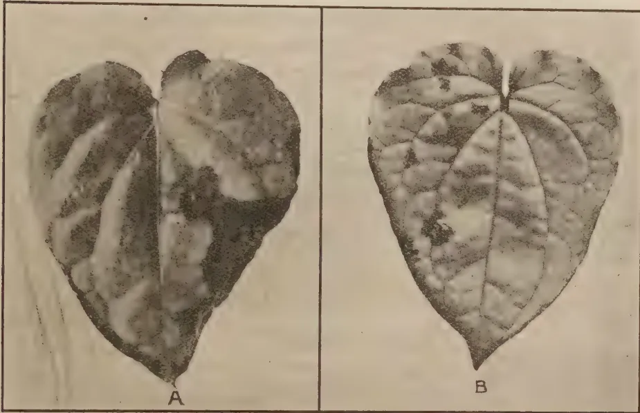
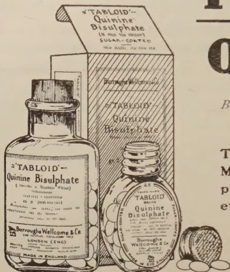

VOL. LXVII.
PERADENIYA, OCTOBER, 1926
No. 4.
In the January number of the Tropical Agriculturist for the year 1919, attention was drawn to the possibilities of grape fruit cultivation in Ceylon. It was then recorded that there were, to the best of our knowledge, three grape fruit trees in the Island—the result of an importation through the Agricultural Society. It was further recommended that trials with grape fruit should be made in different districts.
During the seven years which have elapsed since that article was written, the grape fruit has increased in popularity in most countries of the world and increasing shipments have been finding their way from abroad to the markets of Ceylon.
The Department of Agriculture has planted a number of plants on its various Experiment Stations and has supplied a number of plants from seeds collected from fruit produced locally and from seeds imported from Jamaica and Florida. During the present planting season it is expected that upwards of seven hundred of seedlings will be disposed of from the nurseries of the Royal Botanic Gardens.
In the fruit plot of the Experiment Station a number of grape fruit trees have been grown and this year the crop is an exceptionally heavy one and clearly indicates the possibilities before the cultivation of this fruit in the Island
The quality of different grape fruits varies considerably and, whereas it has been necessary to depend largely upon
194[OCTOBER, 1926.seedlings for distribution, the time has now come to review the situation and to arrange for supplies of budded plants of proved quality to be distributed. Of the trees on the Experiment Station, Peradeniya, two produce fruit of really first class quality and on the Experiment Station, Anuradhapura, there is one which produces fruit of average quality.
It is proposed only to utilize seed from these trees for nursery work and also to use bud-wood from them for budding purposes.
The grape fruit is comparatively a new fruit to the United Kingdom market but the growth of the trade has been rapid, the imports having been six times as large in 1924 as in 1920. Three-quarters of the quantities consumed are the produce of foreign countries, the United States of America being the main source of supply. Empire grown fruit comes from South Africa and the British West Indies. Grape fruit is also grown in Australia but is only exported from there in comparatively small quantities.
The grape fruit will grow in all districts where oranges grow, but coastal strips or islands are more favourable for the production of a good commercial article than the inland areas.
The growing of grape fruit in Ceylon has now been tested and there is sufficient evidence to show that the Island can produce good crops of grape fruit in practically all districts and that its produce can with careful selection be made to rank with first class produce from other tropical countries. It therefore only remains for Ceylon to establish an industry to meet its own requirements and those of its large continental neighbour and even to enter into the export trade in this fruit to the United Kingdom. The possibilities are there and it only remains for the industry to be taken up commercially. The total imports of grape fruit into the United Kingdom in 1924 alone amounted to 81,367 cwts. of a value of £140,686.
OCTOBER, 1926.]195H. R. COOPER, B.Sc., F.C.S.,
Chemist, Indian Tea Association.
Any form of heavy or medium pruning must be followed by loss of crop for at least several years. Unless, therefore, the bush after this period is permanently and greatly improved by the cutting back, the operation has only entailed increased expenditure and decreased returns.
In a large number of cases in practice, cutting back, so far from having effected any improvement in the bushes, has rendered them much worse than they were before. Unless it is remarkably vigorous any stem cut when an inch or more in thickness throws a new shoot from some distance below the cut. The wood above the new shoot dies, leaving a snag which very soon becomes diseased and starts the rotting of the remainder of the stem. Even when the snag is removed within a year or two after cutting, the cut through dry wood will not callus and disease may enter through the wound.
Collar pruning is not necessarily a safeguard against introduction of disease after cutting back. Collar pruning means a cut through the thickest and oldest part of the bush, where it is most difficult for the wound to heal over, and if a disease is introduced at the collar it cannot afterwards be removed by pruning.
Cutting back is too often performed as a matter of routine, or worse, as the only method of restoring a weak bush to health. Many areas of tea which are considered to require cutting back on account of weakness or decreasing yield are really in need of nursing and feeding because they are suffering from the results of their last attack of cutting back.
Tea is often cut down because it is weak, and nothing done to remove the cause of the weakness. As soon as the production of dark green vigorous shoots following the stimulus of cutting has ceased, the original cause of weakness again asserts itself with increased force on a bush further weakened by cutting. In bad cases, the stimulus of cutting fails to produce even the first vigorous shoots. The worst tea one sees is usually tea which, being originally poor, has been further weakened by cutting, and has soon afterwards been cut down again.
Cutting down, by itself, can only effect any improvement either because disease of the stems is thus removed, or because good growth is given after the cutting. In the latter and more general case, greater improvement, with less loss of crop, could have been produced by allowing good growth by sparing plucking, without cutting down, particularly if cultivation and manuring were improved also.
Cutting down, then, has no virtue in itself and introduces causes of danger to the bush. It should therefore be avoided when possible. The cause of mere weakness or of decreasing yield should be traced, and the cause
196[OCTOBER, 1926.removed; while the presence of diseased branches should be treated by the clean removal of the diseased branches only, while, again, the conditions which render the bush susceptible to the particular disease should also be improved.
There are however cases when one step towards the simplest method of restoring a section to full yield is some degree of heavy pruning. Such cases are most commonly met with on old tea, generally because the removal of single branches as they became diseased, and the clean removal of snags which introduce disease, have not been properly dealt with during the ordinary routine of pruning, while preventive measures such as spraying and correct manuring have probably been neglected, also.
Any pruning which still leaves diseased wood in the bushes can only effect a temporary improvement in vigour at best. It is for this reason that any kind of medium pruning is in such disfavour with a very large number of planters. The school which favours making a clean sweep of everything by cutting right down to the ground is strongest in Upper Assam where not only is the climate relatively very favourable to this operation, but bushes thought to require it are generally in better condition than, for example, on a hot droughty exposed teela in the Surma Valley. Yet even in Upper Assam 10 per cent. of good bushes may be expected to be lost after collar-pruning, while the loss is very often 20 per cent., and in bad seasons 40 per cent. of deaths is not uncommon. On account of this possible heavy loss a very large number of men condemn collar-pruning altogether. Between these two extremes the truth lies.
Since a bush is entirely dependent on its leaves to provide food, a bush deprived of its leaves can only throw fresh shoots by drawing upon ready-formed reserve food material in its stems and roots. Until fresh leaves are formed the whole life-cycle ceases. The young fine rootlets of a collar-pruned bush die and have to be re-grown after a fresh food supply is established from new leaves grown out of reserves. Such reserves are naturally greater in a medium-pruned than in a collar-pruned bush, and in consequence the number of deaths after medium pruning is very small indeed, both because a larger amount of stem means a larger amount of reserve food in the bush, and because from the thinner wood left, new shoots will more readily arise.
The more good clean wood which can be left on a bush, therefore the better, but no branches carrying disease must be left, otherwise disease will spread to the sound parts of the bush. Neither is the presence of hollowed, knotted or otherwise damaged wood desirable in a bush which is to be renovated. To remove everything undesirable of this nature often does mean that the bush must be practically collar-pruned. There are however cases where only the top has become attacked by diseases, or where it is desired simply to reduce the height of a sound bush to allow more convenient plucking. In such cases it is often possible to leave a good frame composed of sound branches, by cutting the bush across at a convenient height and removing only a little unsound wood below that height.
When cutting back the reduction of the height of the bush is always a consideration, and for that reason it is hardly sound to make the cut any higher than about 18 inches or the bush will too soon be over-high.
OCTOBER, 1926.]197again. On many bushes a cut at 18 inches would leave little more than a single stump which is most undesirable. It is not worth while to medium prune unless something of a frame is left, and for this reason, also, the only method of cutting back a bush may be practically to collar-prune it.
In practice then, either because there is no frame sufficiently near the ground or because the frame is composed almost entirely of diseased branches, the only sound method of cutting back a section is often very nearly to collar-prune most of the bushes. It is urged however that whenever there is a chance of preserving a good sound frame, it should not be neglected.
To cut a bush to the collar leaving nothing, when some good clean branches might have been left, is a serious error, because the percentage of deaths is unnecessarily raised. Particularly is this so when fine young shoots near the collar might have been left, so that one could get the advantage of removing the whole of the old wood while leaving the shoots to ensure that the plants will live, and come away much more quickly and strongly than if no shoots had been left. If there are no such shoots then older thicker wood may often be left, so long as it is sound. From such branches shoots will arise much quicker than from the stump, even if the branch is so cut down that no leaf remains on it, but it is of course an advantage to leave leaf if possible.
When such " Kickers " are left there is a tendency for them to become attacked by red spider and other diseases. It is therefore sound to cut these away, or down to good wood, after they have done their work, that is when new shoots have arisen from the stump. In leaving " Kickers," also, care should be taken that if they are strong then kickers should be left on each side of a stump, or a one-sided bush may be grown, and that side of the stump from which no shoots arise will rot, and eventually so will the whole bush. If only one strong kicker is left, it must be cut away very early.
Both opposite opinions (1) that tea should never be collar-pruned, and (2) that collar-pruning is the only satisfactory method of cutting back, contain germs of truth, but both err in going to extremes. Every individual bush should be treated on its merits, but in practice it is necessary to give a fairly simple order.
If it is decided that there are frames worth saving, then an order may be given to cut down to the particular height which suits the average bush best, with the proviso that all diseased branches must be removed cleanly, while some few bushes may have to be collar-pruned.
If it is decided that it is necessary to cut right down, then that order may be qualified by ordering that young shoots or good branches from near the collar must be left. Both jobs require good supervision, but it is remarkable how soon good coolies grasp the principles, and apply them.
In addition to the points already referred to a few others may be briefly mentioned.
As far as possible one should aim at the avoidance of snags. If a branch can be removed flush with a shoot, however poor the shoot may be, the remaining wood is preserved from death by the flow of sap induced by the presence of the shoot; and if the shoot or a new one arising just under it, can be induced to grow with sufficient vigour, then the cut (if made cleanly)
198[OCTOBER, 1926.will callus over, and leave no wound to be infected. When a cut at a certain height is ordered, it is always worth while to make the cut a little higher or a little lower if by so doing a shoot can be left.
If there is a knot in the branch, a new shoot often arises from the knot nearest to the cut. For this reason many planters are in favour of making the cuts through knots, and in that case a large number of new shoots do arise from the top of the cut shoot. The knot however is a very hard thick piece of wood, and a clean cut through it is very difficult to make. A cut through a knot also is difficult to heal even with a shoot to help it, neither is a shoot from a cut knot usually as good as a shoot from straight wood or even as a shoot from the next lower knot. It is probably better therefore to attempt to cut below knots, and to try to leave straight wood.
The chief cause of trouble after cutting back is the entry of fungus diseases after cutting back. Tar, and fungicides such as Bordeaux paste, have been used to prevent entry of disease at the cut surface. Unless, however, a shoot arises close to the cut, the wood is bound to die back to the next shoot, and disease will eventually attack the dead snag. The only perfect protection is a natural callus growth over the wound, and this can only be obtained if a shoot arises near a clean cut on a vigorous bush. The vigorous bush must be obtained by previous soil treatment and by sparing plucking.
The difficulty, of course, is to get the shoot to arise near the cut. On old hide-bound stems, particularly if cut before a dry spell, the highest new shoot generally comes away some distance below the cut, leaving the wood above the shoot to die. If, however, the shoot will not come at the cut, the cut can always be made at the shoot after a shoot has grown. The second cut is best made by going over the pruning a second time as soon as shoots have come away after the first cutting back. This of course greatly increases the labour of pruning but it is better to do a small area well, than a large area badly.
If however the snags are left for one year only, little harm is done, but tea after medium pruning should never be left unpruned, unless the snags are first removed either immediately after cutting back, or at the end of the year following the cutting back.
In the case of a cut right down to the ground, the cut is automatically made very close to the place where new shoots will arise, and therefore if the stump comes away quickly it will always start to callus. Shoots from collar-pruned bushes however are often very slow in coming, and meanwhile the exposed stump dries, bark cracks away from it, and the wood starts to die back. Disease then enters, and even though shoots arise from lower down, the life of that bush is often a short one. The higher the stump is out of the ground, the more likely it is that shoots will arise from it, but it is also more likely that they will arise below a piece of dead wood which will become diseased.
Shoots arise much less readily from roots than from stems. It is therefore not sound to fork away soil before cutting and cut through the root itself, but if half an inch of stem is left it is sufficient on an old stump. The cut
OCTOBER, 1926.]199will then be about at ground level where the bark will be kept moist by the soil, and after the stump has come away it will become covered by soil, which will assist the continued growth of the protective callus, by keeping it moist, while the layer of soil is itself a protection against fungus attack. Stumps cut to the ground and lightly covered with soil usually callus well, and throw good shoots also particularly in sandy soils.
Shoots however do arise more freely if the stump is exposed by forking away the soil. This forking is often overdone and then results in drying not only of the stump but of the roots also. Only an inch or so of stump should be exposed at most. In this case the cut bark is exposed to drying. It will however callus splendidly under a paste, of fresh cattle manure with a little soil, spread over the cut, particular attention being paid to the covering of the cut back. This paste may be applied also with advantage to cuts on thick branches.
It is hardly necessary to remark that cuts should be made as smooth as possible, to give them the best chance of callusing over. Because, once upon a time, daos were used for heavy pruning, it cannot be argued that the nature of the cut is of no importance. Kukris are still occasionally used with success for collar-pruning, but the instruments are sharp and the men skilled in their use.
For cutting to the collar or for heavy branches, a sharp saw is the best instrument, and it should leave the bark unbroken at the edges. The practice of bevelling the edges of a saw cut with a knife is a bad one. The wood, above the level to which the bark is cut, is almost certain to die and to hinder callus formation.
If cutting back is to fulfil its purpose of replacing old and diseased branches by vigorous new ones, the bush must be got into vigorously growing condition before it is cut down.
No treatment, of course, can cause dead wood to throw new shoots, nor will treatment produce good shoots from branches so diseased that they ought to be cut away; but treatment should be able to produce good shoots at least from the parts of bush which will be left after heavy pruning.
If a bush is so weak as to carry no good shoots, then to heavy prune it will only further weaken it. The cutting back of such a bush should be postponed till it is in better condition. If treatment applied with this object is found to make heavy pruning unnecessary, all the better; but at any rate such cultivation, manuring, and sparing in plucking must be applied as will bring the bush into condition to come away well after cutting back. Neglect in these respects before the cutting, cannot be atoned for by good treatment after the bush is cut-back. It is clear that a bush cannot take advantage of raw material in the soil, if it has few leaves or none to manufacture it into plant food. A cut-back plant can only take advantage of good after-treatment when sufficient leaves have been grown out of reserves produced in the bush before it was cut down. There are, for examples, cases on record where a section has been cattle-manured and a part cut down immediately afterwards which came away much less well than another part carrying similar tea which was cut down a year after the manure has been applied.
200[OCTOBER, 1926.As regards manuring, 20 tons of cattle manure per acre, a year before cutting back, is an ideal preparation, and one that is usually sufficient by itself. Failing that, a mixture of artificials to suit the soil combined with green cropping may be used.
The very common method of relying on a single standing green crop to be trenched in, in alternate lines, is not a good one. The tea is too liable to suffer in vitality, even if only temporarily, from the presence of too dense a crop of green manure for so long, and the cutting of the roots by trenching also introduces another possible cause for loss of vitality. The cut down and trench at the same time is particularly objectionable, since the bush is then damaged at both ends at the same time; but a weak bush may not recover from trenching even after a year. Nor is it desirable to bury all the manure on one side of a bush only. If high growing crops which occupy the soil for a year are preferred, then it would be better to sow the first green crop four years before cutting down is intended, trench in the first crop three years before cutting back, sow another crop on the trenched lines, and trench in the second crop two years before cutting back. For the year before cutting back a complete mixture may be used. Unless however there is a definite mechanical obstruction in the soil which is hindering growth, deep trenching is not recommended for tea to be cut back, although shallow trenches may be used as convenient for burying green crops.
It is of course impossible to lay down rules for the amount of manuring necessary before cutting down. If after one year's treatment the condition of the tea still appears too poor, then treatment should be continued.
If the frame is to be cut away there is no object in spending money and time on expensive pruning. To leave the bush unpruned however may be to expose it to such a strain as will weaken it. A good system in general is merely to cut across without any cleaning out at all. The wood left, also, may be rather longer than is usual on ordinary top-pruned tea. A good crop will then be obtained, without undue exhaustion of the bush, if it is in good health.
In the case of a bush which is to be cut down because it is weak, or becoming weak, it should naturally not be exhausted by any attempt to get a large crop before cutting down. No rules, of course, can be suggested, but plucking should be lighter according as the bush is weaker, and in extreme cases it is advisable to leave weak bushes unplucked altogether.
When tea prices are good, it pays to manure any tea every year. Whatever prices may be, however, it is essential that a cut-back bush should be fed, while it is rebuilding its frame. No rules applicable to all soils can be given, but manuring must vary according to the soil. Complete mixtures accompanied by green manuring are required. While "pruning mixtures" should nearly always provide potash and phosphoric acid, it is unsound to rely on these only. Nitrogen also is necessary to produce good stems and leaves to feed them.
OCTOBER, 1926.]201Cultivation also must not be neglected. This is an important matter when considering the advisability of cutting back. While bushes which provide good cover may keep fit on three or four rounds of light hoeing, such treatment on a cut-back area may ruin the tea by letting it go under jungle.
One or two rounds of forking around the collar will be necessary while if light hoeing is relied upon to keep down jungle when it is growing vigorously, a hoe as often as every three weeks may be advisable until the bush is big enough to provide cover.
If increased expenditure on cultivation and manuring cannot be afforded, then cutting back should be postponed until it can.
Collar-pruned areas on suitable land however are particularly suitable for buffalo-cultivators.
Expenditure on cultivation and manuring may be reduced if cut-back bushes are allowed to grow unplucked, or plucked very lightly until they provide sufficient cover to keep down jungle. The crop lost from cut-back tea by plucking lightly, or even not at all, cannot be very considerable, while no other treatment can have such good effects on the bush.
Collar-pruned tea (if very vigorous) may be plucked to 27 inches, or sometimes even 24 inches, from the ground, without much harm if it is to be pruned again in the following year. Thirty inches or even 36 inches is often much better on weak tea, in the latter case plucking being only sufficient to hold back over-vigorous shoots.
It is uncommon to find collar-pruned bushes over-plucked, because to do so would mean plucking inconveniently near the ground, but it is very often the case that the only reason why medium-pruned tea is unsuccessful is that it was over-plucked after cutting back. Much of course depends upon the vigour of the bush, but in our opinion a cut-back bush of good jat very rarely should be plucked to leave less than 12 inches of new growth above the pruning cut (which on a bush pruned to 18 inches from the ground means plucking at 30 inches from the ground), while plucking in no case should be nearer to the ground than 27 inches.
After cutting back, pruning has of course to be directed to the building of a strong frame of reasonably wide spread, but the chief consideration must be the avoidance of diseased wood in the bush.
The year after cutting back is the time when good pruning is of the greatest importance.
Whether the tea was medium pruned, or collar pruned with Kickers left, new shoots will have arisen in many cases some distance below the cuts and hence will have dead snags above them. It is at this stage that it pays, after cutting at the height ordered, to get at the bush with knives and small saws to cut out every bit of dead or diseased wood flush with a sound shoot.
202[OCTOBER, 1926.This pruning is far more important than the original cutting back, for nothing but sound wood should remain after it. The old wood should in every case be left protected by a shoot growing from its top, and the new one-year wood should also as far as possible be cut to an eye. Such a bush very easily can be kept free from dead wood throughout its future history.
Because it is necessary to clean up a bush as soon as possible after cutting back, tea should never be left unpruned the year after cutting back, unless either the original cut was flush with the ground leaving nothing, or the original heavy pruning was gone over again to remove snags after shoots had come away.
When the bush has been thoroughly cleaned up and has had two years of light plucking, it should be vigorous enough to be left unpruned without fear, with the double object of getting a good crop and of leaving leaves to feed up a strong low frame. If left unpruned, the bush must be cleaned up again very carefully at the next pruning. For example the following rotation of pruning would be a good one, though it is by no means suggested as a standard to suit all cases.
First Year.—Cut-back.
Second Year.—Pruned leaving 4 inches to 10 inches new wood (according to height of original cut), and all dead and diseased wood removed.
If less than 4 inches new wood, thick after generous growth, is left, the new shoot is very likely to arise from the base of the new wood leaving a lot to be cut out at the next pruning.
On low cut tea more wood will naturally be left. Opinions on how much wood should be left after collar-pruning vary between 5 inches and 12 inches above the collar. The lower the cut, the wider will be the spread near the ground, while the higher the cut the greater will be the immediate crop, the less die back there will be, and such dead wood as occurs is more easily cut out in the following year.
In our opinion about 8 inches is generally most satisfactory, but it may be lower on thin wood which has grown nearly perpendicularly, and higher on wood which is very thick and well inclined outwards.
Third Year.—Unpruned, if bushes are thoroughly fit.
Fourth Year.—Pruned 3 inches to 6 inches above last pruning cut, and all snags carefully cut out flush with a branch.
Here, again, very short wood should not be left, or new shoots may arise from the junction of the 2nd-year wood and the 3rd-year branch, forming a knot.
Fifth Year.—Pruned as appears to suit bush best.
Sixth Year.—Unpruned.
—Quarterly Journal of the Scientific Department of the Indian Tea Association, Part II., 1926.
OCTOBER, 1926.]203P. H. CARPENTER, F.I.C., F.C.S.,
Chief Scientific Officer.
and
C. R. HARLER, B.Sc., F.I.C.,
Chemist, Indian Tea Association.
(Continued from Page 85 of "T.A." for August, 1926).
The Fermenting Room.—The fermenting room should be cool and damp. The temperature of the room by no means controls that of the ferment, but it undoubtedly has a large influence on it, and should be kept at 82° F. or lower if possible. This temperature represents a practical maximum in the plains during the hot weather.
Light, so far as can be seen, has but little influence on the course of fermentation but it has become customary to keep fermenting room dark. This usually ensures a lower temperature in the room. It is not considered desirable that the fermenting room should be so dark as to make supervision of work difficult. Direct sunlight or direct reflection from the overhead sky is to be avoided.
The floor of the fermenting room is best made of good cement. A lime cement, being alkaline, should be avoided for alkalinity gives dark colours. Although experiments have been made in order to test which is better, glass or cement beds, and the results generally have shown no practical difference between the teas fermented on either, still the general opinion is that it is easier to make good tea on cement than on glass.
The fermenting floor can be kept clean by washing with cold water and no accumulation of slime should be allowed. Particular care should be taken with the cleaning of the floor and as soon as any unpleasant or unrecognised odour is noticed in the room, the floor should be thoroughly washed and scrubbed with cold water and if this does not effect the removal of the smell then a dilute solution of permanganate of potash should be used. On no account should lime water or washing soda be used for this purpose since these solutions, if not completely removed by the final washings with water, will produce bad colours.
The floor should contain no corners, crevices, nor cracks capable of harbouring old leaves or tea juice. In order to facilitate the keeping clean of the floor there should be no raised nor sunk parts as beds for the leaf. Pillars in the fermenting floor should be avoided if possible since here again are angles where harmful bacteria can accumulate. A distinct camber on the floor is an advantage both as an aid to washing and also since it obviates the necessity of a definite channel to carry off any drip-water used for cooling and humidifying purposes.
The use of iron shovels in the fermenting room is to be discouraged, not that their use will appreciably alter the value of the tea but this is one of the many small points which together go to make up a measurable difference in quality.
204[OCTOBER, 1926.The atmosphere in the fermenting room should be as humid as possible. The amount of moisture in the atmosphere or the degree of humidity is measured by the wet and dry bulb thermometers. These two thermometers are identical in structure except that one (the wet bulb) has the bulb surrounded by a piece of muslin kept wet by means of a wick coming from a small bottle of water. As the water on the muslin evaporates so the wet bulb is cooled. The dry bulb thermometer registers the air temperature. It will be seen that the drier the atmosphere the quicker will the muslin round the wet bulb dry and, in consequence, the lower will be the temperature registered by this bulb. The difference then between the wet and the dry bulb will be a measure of the drying power of the air and this is actually a measure of the moisture in the air. If the difference between the two bulbs is nil, then the atmosphere is saturated. In this case no drying of the muslin has taken place and the relative humidity is 100 per cent. A difference of 1° F. between the two bulbs represents a relative humidity of about 95 per cent. working at the average fermenting room temperature.
In the fermenting room a difference of not more than 1° F. between the wet and dry bulb should be aimed at although this degree of humidity is difficult to obtain. With a fermenting room placed on the north side of the factory, fitted with a good double ceiling and hung with wet cloths both round the perforated walls and as baffles, a high degree of humidity is possible.
Some factories have installed humidifiers similar to those used in Cotton Mills. These humidifiers force water under high pressure through a fine jet and the result is a cloud of water vapour. A cheap, make shift humidifier may be constructed as follows. The lance and nozzle of an ordinary Knap-sack sprayer is placed downwards in the centre of a cylinder of metal about 10 inches in diameter and 18 inches long. Water at about 100 lbs. pressure is forced through the nozzle and the result is a very fair imitation of the spray produced by a humidifier. Some of the spray collects as drops which may be caught by a cone below the cylinder and carried off in a pipe. A little adjustment of this simple apparatus to suit local requirements will produce a machine capable of raising the humidity of the fermenting room to 100 per cent. Head space of about 15 feet is necessary, otherwise the area over which the machine produces an effect is much reduced.
The influence of humidifiers on colours is discussed later but it must be mentioned that as the air becomes loaded with water vapour so the temperature falls. How far the good colours are due to high humidity and how far to low temperatures has not been estimated.
Spreading and Time.—The thickness of spreading of the fermenting leaf and the time of fermentation are factors which should be considered together. To a large extent the fermentation process may be regarded as an oxidation process which is hastened both by temperature and also by the amount of oxygen (i.e., air) available.
As the fermentation proceeds, briskness or pungency gives way to flatness and at the same time strength is gathered. We are thus faced with the problem of staying the loss of briskness or pungency whilst the tea has time to take on strength. This may, in a way, be achieved by thickening the spreading which in effect reduces the air supply and slows up certain chemical reactions connected with loss of briskness. If the spreading is
OCTOBER, 1926.]205thicker than about 5 inches then there is a danger that the air supply will be so reduced and the chemical reactions proceed so slowly that the tea remains green. On the other hand when the reactions do proceed there is a danger with thick spreading that the heat developed will not be able to escape. The result is a rise in temperature and a consequent hastening of the chemical reactions. The problem is thus a complicated one.
One way out of the difficulty is to spread thinly—about inches—and to put wet cloths over the ferment. The air supply is thereby restricted and at the same time the leaf does not get hot. At the end of the season when lower air temperatures are experienced the time of fermentation must be lengthened or the spreading thickened, or both. As an alternative the air supply may be increased, i.e., the spreading may be thinner, provided the atmosphere of the fermenting room is humid.
The temperature of the fermenting leaf should be as near F. (or lower) as possible when it is first put on the fermenting beds. If the leaf as it comes from the roller is put through an efficient ball breaker installed in a cool place, it will certainly cool to a low enough temperature. During fermentation the temperature rises to a maximum at which it remains for some time and then falls. The maximum temperature should not be above F.
The time of fermentation must depend on the chemical state of the leaf when it leaves the withering racks. Quite apart from this, however, different gardens seem to produce leaf requiring different types of fermentation and experiments are needed on each individual garden. All experiments however must be carried out with forethought and care and only one factor should be varied in each experiment. Results must be interpreted with caution and each experiment must be pushed to a conclusion. A pointed example may be quoted. At one factory the teas produced were weak and the suggestion was made to lengthen the time of fermentation. Three experiments were carried out with the leaf fermenting for 3, , and 4 hours. The 3-hour tea was brisk and weak and valued at Re. 1/00 (nominal). The -hour tea was less brisk, but stronger and valued at 14 annas, whilst the 4-hour tea was still less brisk, but notably strong and valued at Re. 1/0/6. The second tea was mediocre with no stand-out briskness or strength and thus the price was not intermediate between the other two but below them. If a single experiment only had been tried and the fermentation increased by half an hour the wrong conclusion might have been drawn.
Colour of Infused Leaf.—The colour of the infused leaf is important. The green colour often obtained may be due to an insufficient wither, not enough air in the fermenting leaf or a too short fermentation. Dark green colours are often the result of a dry breeze blowing on the leaf. Uneven colours result from insufficient ball breaking after the rolling process. A bright green infusion usually goes with a brisk tea and indicates under-fermentation. Such teas when over-brisk are often called "raw" or "green." A dark green infusion goes with a flat tea and often denotes under-withering accompanied by over-fermentation.
Bright colours are obtained from fully withered leaf if the fermentation is a short one, but it is easier to obtain good colours from leaf withered on the light side. Thin spreading, provided the atmosphere is humid and no drying
206[OCTOBER, 1926.of the leaf takes place, gives bright colours, but it may by reason of the plentiful air supply, push certain chemical changes to a conclusion before others have had time to develop sufficiently and the resulting tea may be soft.
Good results have been obtained by spreading thickly (to 4 inches) and turning the fermenting leaf each half hour. The best results have been obtained from leaf thinly spread in a cold, humid atmosphere.
The best colours are generally made in the morning when the temperature is low and the atmosphere humid. Poorer colours are made in the afternoon as the atmosphere gets dryer. In some factories all tea is manufactured at night for it is considered that the slacking off in efficiency which must arise with night work is more than compensated for by the lower temperatures and higher humidities pertaining at night.
The Control of Fermentation.—If the temperature of the leaf is kept low and the atmosphere humid then the rate of oxidation going on during fermentation may be said to be proportional, within limits, to the air supply. This means that with the conditions regarding temperature and humidity ideal, a thin spread (good air supply) combined with a short fermentation should give the same results as a thicker spread with a longer fermentation.
This has been observed in the factory many times and the teas produced under the following conditions:—
| inches spread | hours' fermentation. |
| inches spread | hours' fermentation. |
| 5 inches spread | 6 hours' fermentation. |
were identical so far as the taster's report was concerned. No very definite figures can be given concerning the best fermentation conditions because so much depends on the degree of the wither. With a normal good wither, a cold rolling room ( F.), and leaf in the fermenting room at F., a fair average time of fermentation is hours if the leaf is spread at inches. At F. it has been found that the time must be increased to — hours and for intermediate temperatures the increase should be in proportion.
From the chemical point of view firing merely means the cessation of chemical action in the leaf. The rate of fermentation increases with temperature so that unless the leaf meets a certain degree of heat on entering the dryer the fermentation is merely carried on at an increased rate and the tea may be over-fermented and lose briskness unless the necessary allowance is made in the time the leaf remains on the fermenting floor.
The temperature of the exhaust air of a pressure dryer, i.e., the air which meets the leaf when it first enters the dryer, should be about F. below the top tray. Theoretically the best temperature is F. but with the ordinary dryer such an exhaust temperature would necessitate too high an initial temperature.
The first fire should be at least 12 annas, otherwise the second fire must be carried out at a high temperature and the tea is liable to lose quality.
The firing temperature should be kept as low as F. on forced draft machines. If the firing temperature is too low—below F.—the tea will not keep, for the enzymes are not destroyed and fermentation continues. As the temperature of firing is increased so the tendency to produce poorer
OCTOBER, 1926.]207teas is increased. The higher the firing the less briskness and the less strength will be obtained in the final teas. High firing destroys the colour of tip.
In many factories firing is carried on at high temperature in order to cope with the leaf. In others it is often stated that a dryer will not function unless the initial temperature is at some figure far beyond the safety mark. In these latter cases the trouble generally lies with the fan which is too slow running. The capacity of a dryer is the product of the rate of air flow and the temperature of the air. It follows then that the capacity may be increased by speeding up the fan and leaving the temperature at its original figure. In several factories the fans are run at speeds somewhat in excess of the scheduled number of revolutions and good has always resulted from such increases.
A series of experiments were carried out on a Down Draft Dryer in order to investigate the temperature at which tea was high fired. This particular type of machine was used because of the ease of control but the temperatures apply to any form of dryer.
Thus—
| Tea fired to 16 annas at 170°F. | — | not high fired |
| Tea fired to 16 annas at 170°F then left at 170°F. for 15 mins. |
— | not high fired |
| Tea fired to 16 annas at 210°F. | — | not high fired |
| Tea fired to 16 annas at 210°F. then left at 210°F. for 10 mins. |
— | high fired |
| Tea fired at 16 annas at 240°F. | — | high fired |
| Tea fired at 170° and temp. raised to 240°F. by which time tea had dried to 14 annas |
— | not high fired |
| Finished at 170°F. |
The conclusion is that tea cannot be high fired at 170° F. but that temperatures over 200° F. become dangerous if the tea remains for long at such temperatures. True, Empire machines with initial temperatures as high as 260° F. turn out tea which is not high fired but it must be remembered that the leaf on the bottom tray only is submitted to this temperature. Firing under such condition causes a loss of briskness and strength in the finished tea.
When leaf is fed into an empty dryer the first tea discharged is liable to be high fired, if the dryer is heated to much more than 200° F. In order to obviate this the side doors of the dryer should be left ajar till the first leaf is near the bottom trays.
Automatic temperature recorders are useful on drying machines. Although no very definite firing temperature can be given if tea is to be consistently turned out at 12 annas during the day a variation of 10° F. should cope with any variation in the moisture content of the leaf during the day's manufacture.
208[OCTOBER, 1926.“Gaping” of Tea.—Tea when it is packed should contain 5 to 6 per cent. moisture. If it contains more it is liable to “go off” before it gets Home and if less, post-fermentation is restricted and the tea will not mellow and it also loses pungency. When tea comes from the second dryer it contains 2—3 per cent. moisture but during sorting more is picked up, for tea is very hygroscopic, and the moisture increases to 7 or 8 per cent. In cases where much picking over for stalk is done the moisture figure may rise to 10—11 per cent. In several cases where complaints have been received that the tea does not keep well, examination has shown the moisture content to be between 7 and 8 per cent.
It is very difficult to tell by feel or smell whether tea contains the right amount of moisture for packing. Some factories have installed a chemical balance and a small steam oven and thus the moisture content of each bin is estimated before the tea is packed. The process of moisture determination is a simple one and the apparatus costs less than Rs. 200.
The unnecessary heating of tea causes loss in the quality of the liquor so that gaping should only be employed when it is necessary and even then it should be carried out at as low a temperature as possible. A temperature of 180° F. is sufficiently high.
The sorting of tea is so largely dependent upon market conditions that it is not proposed to deal with it here. There is, however, one point to which attention might be called. The “greying” of tea is brought about during sorting and cutting of the dry leaf and consists in polishing the surface of the tea. Any machine therefore that causes a rubbing of the surface of the leaf tends to produce greyness. Machines running at high speed by increasing the rubbing effect tend to increase the amount of greyness. In sorting therefore the type of machine used should be one that, so far as is practicable, does away with the rubbing of the leaf. The circular sifters running slowly consequently tend to grey the tea less than if they are speeded up but in any case they cause the rubbing action to take place. Other machines such as rotary sieves running at much higher speeds also give greyness to the tea. Machines which produce a hopping rather than sliding action on the sieve tend to grey the tea less. Machines depending on an air-blast such as the deflector type of machine are the least liable to grey the teas. One cause for the greying of tea is the speed at which the cutters or breakers are run. A fast run machine will tend to grey the teas much more than one run slower, and consequently such machines should be run at the slowest speed that is compatible with efficiency. One often sees such machines run at too high a speed in order to get through the amount of work whereas what is really required is another machine so that the two machines may both work at proper speeds.
During the sorting tip is very easily destroyed, consequently to obtain a tippy finished tea it is necessary that the fine mal should be subjected to the very least possible amount of sorting and cutting.—Quarterly Journal of the Scientific Department of the Indian Tea Association, Part II., 1926.
OCTOBER, 1926.]209W. H. BRITTAIN, Ph.D., M.Sc. (in Agriculture),
Entomologist;
and
W. S. SHAW, Ph.D., M.Sc., A.I.C.,
Tea Scientific Officer, U.P.A.S.I.
The experiments described in this report are of a strictly preliminary character, and were conducted on a very small scale. The results are presented herewith not only on account of the great significance of the problem involved to the tea planters of South India and the necessity for the control of a pest responsible for so much damage, but also because of the promising nature of the results themselves, and because it represents the first attempt to control Helopeltis by this method.
In order to comprehend fully the nature of the results obtained it is essential to have some conception of the material employed in the experiments, especially with regard to the characteristic properties which make its use possible in tea culture.
Briefly, it may be stated that Calcium Cyanide is prepared by a series of processes commencing with Limestone, Coke and Nitrogen derived from the atmosphere. From the two former materials Calcium Carbide is prepared; which, after being raised to a white heat, is caused to absorb the Nitrogen, liberated from liquid air by boiling. The resulting substance formed is the well-known fertiliser Calcium Cyanamide. This Calcium Cyanamide is then fused with a Sodium Chloride in an electric furnace, by which process the Cyanamide takes up one more atom of Carbon and is thus converted into Calcium Cyanide, a substance with profoundly different chemical characteristics from Cyanamide.
When Calcium Cyanide is acted upon by the water vapour present in the atmosphere, gaseous Hydrocyanic acid (Prussic acid) is produced the reaction involved in the production of this acid being explained by the following equation:—
The rapidity with which this hydrolysis takes place is dependent mainly on three factors:—
The result is that a number of grades of the cyanide material are in existence, the commonest form appearing in the market being that termed commercially as "Cyanogas 'A' Dust." This 'A' Dust is a very fine, slate-coloured powder, of which 80 per cent. will pass through a 200 mesh sieve. Using this grade, it has been determined that, when the material is spread out in a thin layer such as is formed when it is projected from an appropriate
210[OCTOBER, 1926.dusting machine 90 to 98 per cent. of the poisonous hydrocyanic acid gas is evolved within the first two hours, provided that the relative humidity is 35 per cent. or more. If the relative humidity is below 30 per cent. the evolution of the gas is considerably retarded. It may be added that localities with such a low humidity as 30 per cent. are more the exception than the rule in tea growing districts. The maximum concentration of the gas is attained after a period of about forty minutes, but there is very little increase after the first five minutes' exposure to the suitable moisture requirement. Further, it has been determined that the reaction takes place practically independently of the temperature. Coarser grades than the 'A' Dust are produced for certain special purposes, but where these are used, or where the thickness of any one of these grades is increased, the evolution of the gas is correspondingly slower.
It is claimed for Calcium Cyanide, that it has the highest range of adaptability of any other known insecticide. Arsenical or other food poisons may be effective for insects that eat solid food, while oil emulsions and other contact poisons may destroy insects of the sucking variety that sting the plant and feed upon the liquid sap of the latter. It has been shown by Andrews that the Helopeltis insect has the peculiar power of dealing with contact poisons, by systematically washing itself free from the insecticidal liquid. It was therefore concluded that spraying was of little avail against the pest; however, owing to the patent powers of Calcium cyanide as an insecticide, without the necessity of contact with the insect, it was felt that it might prove of some avail in assisting, if not completely eradicating the pest. In support of this, it may be added that Calcium Cyanide is mainly utilized as a controlling agent for insects of the sucking type, to which type Helopeltis belongs and some examples of its application to such insects which might be cited are, the elimination of plant lice, plant bugs, thrips, psyllas, fleas, etc. It may also be employed satisfactorily against certain species of leaf beetles and other insects of the biting type. These instances given by no means exhaust the application of Calcium Cyanide as a control against pests, but a discussion of all the uses of the material is outside the scope of the present article.
A further advantage of the material is the ease with which it may be transported from place to place; but possibly the greatest advantage, and one which will appeal to the South Indian planter, is due to the fact that no water is required for the application of the dust. It is a well-known fact that one of the greatest difficulties experienced by planters in their attempt to control insect or blight attacks by means of sprays is due to the inadequacy of their water supply. In the case of Calcium Cyanide no preliminary preparation of the material is required, no water has to be carried to the place of operations, the material can be applied with comparative ease and rapidity, the effectiveness of an operator equipped with a duster is approximately five times as great as one using a sprayer and finally the equipment employed is simpler, lighter, and less expensive.
A possible argument against its use in Tea may be based on the fact that Calcium Cyanide is a deadly poison. Though it must be said, before proceeding, that further work must be done with regard to any residual poisonous
OCTOBER, 1926.]211effects of the material, still there is sufficient theoretical and practical evidence to indicate that there is no poisonous deposit left on the leaves after a short period of time. As has already been explained in a previous paragraph, all the poison has been evolved in the form of a gas leaving behind harmless Calcium Hydroxide (Hydrated Lime). To illustrate the fact of the complete loss of poisonous residue, the leaves of a tea bush treated the previous day have been repeatedly eaten without any harmful results. While it is not pleasant to have the material blowing directly into one's face, this unpleasantness can be largely avoided by proper manipulation; and in the many experiments which have been conducted with this material in other spheres besides tea, no cooly has ever suffered injury. Thus no fatal accident has ever been reported from any country where the material is used on a very large scale.
With reference to the poisonous effects of Calcium Cyanide on mammals, it has been stated in the Journal of Hygiene (Vol. XXI., No. 3, May, 1923) that "it requires a concentration of 8 parts of Hydrocyanic gas in 100,000 parts of air to kill a dog in half an hour; cats die from twelve parts and goats and monkeys from twenty-five, and it may be assumed that a man will require as much as a goat or a monkey. A man becomes unconscious only when exposed to a high concentration, and if the concentration that caused unconsciousness is not increased, a comparatively long latent period intervenes before death. A person who becomes unconscious owing to exposure to moderate concentrations of Hydrocyanic gas recovers rapidly when placed in the open air."
If, therefore, 100 pounds of the straight product were used per acre this would yield twenty-six pounds of Hydrocyanic acid gas, as assuming that the whole acre were roofed over to a height of six feet and further that all the gas were given off at once, this would give a concentration within the enclosed area of 132 parts of hydrocyanic acid gas per 100,000 parts of air, or 66 parts, if the 50 per cent. dust is used. However, not more than a third of the concentration is attained at any one time, even in tents, so that even in enclosed spaces the most that could be attained would be 22. In the open air it is clear that even this concentration of 22 could not possibly be obtained under the conditions specified of 100 pounds of material to the acre, and hence it is almost a practical impossibility to obtain anything approaching a fatal dose while operating in the open air. Practical proof of this is afforded by the fact that one of us has been using the material constantly for a year and has often been enveloped in clouds of the dust, without any disagreeable consequences being experienced. Short of having the material administered in food, there appears to be no possibility of harmful results accruing from the use of the material in the open air, but it is advisable to understand the simple precautions given on the containers thoroughly, and to follow these as closely as possible throughout the operations. It is further stated that constant dusting by one cooly may result in a slight headache, and it is therefore recommended that a cooly should do one half a day's dusting and then be relieved by another cooly.
212[OCTOBER, 1926.The estate on which the following experiments were conducted is situated about four miles from Vandiperiyar, in Travancore. The bushes were in their second year from pruning and though in quite good condition, plucking had had to be postponed for a number of weeks owing to the ravages of Helopeltis.
The first test performed was made on a clump of Helopeltis insects which had been caught by children previously. This clump consisted mainly of adult insects, but also contained a number of 'nymphs' or larvae. On to this clump a small whiff of the material was blown, and within a second most of the insects were killed. Even those insects which were in the middle of the clump, and had thus escaped contact with the dust, had also been killed. From this test it was clear that the material was extremely toxic to the insects and the way was clear for field experiments.
The tests in the field were made at between three and four in the afternoon and between eight and nine in the morning. In both instances there was a fresh to heavy breeze blowing throughout the progress of the work; and further, in both cases rain fell both previous to and during the operations. Usually conditions of rain and heavy wind are not conducive to the best results in any dusting operation, but as will be seen later these factors did not diminish the degree of effectiveness to any appreciable extent.
The exact infestation per bush could not be accurately determined, even though extreme care was taken in the examination of the bushes for insects. It would appear, however, that the infestation was at least equivalent to five insects per bush. These five insects were usually found in the proportion of three adults to two larvae. In order to increase the number of insects per bush for purposes of experiment, four more insects, which had been previously collected by children, were added to each bush.
In the first day's tests, both the 'A' dust and the 'Dusting mixture' were used, the latter dust consisting of 'A' dust, diluted with an equal quantity of Superfine Sulphur, and which is especially efficacious against Red Spider. Owing to the prevailing heavy wind it was found necessary to make use of a 'Cloth trailer,' under which the dust was projected. As no canvas was available a piece of ordinary factory cloth (cotton) 6 feet wide and 20 feet long was used. This was attached in front to a light bamboo pole. A man stood in front and manipulated the sheet so as to permit of the least loss of the dust, while behind him stood the man with the dusting machine, who pumped the dust under the sheet in such a way as to secure the best possible distribution of the dust, and it was found advisable to have a further coolie assisting in the manipulation of the sheet behind. Rather a heavy application was given as it was felt that it would be easy to reduce the amount used in later experiments, provided the initial experiments were successful.
At the outset the difficulty presented itself of finding a simple, speedy, and accurate method of checking the results. As the greater part of the dead
OCTOBER, 1926.]213insects fall from the leaves either on to the ground or into the middle of the bush, where they cannot be found; it was decided to base our results on the number of living insects found on a number of treated bushes as compared to the number of insects found on the same number of untreated bushes. Children employed on the estate for catching Helopeltis, and hence thoroughly experienced in finding the insects, were used in the experiments. As a matter of interest it was decided to test the ability of these children in finding the insects on the bushes. Forty-eight bushes were therefore selected, four insects were added to them, so that there were at least 192 insects over the area under consideration. To this number must be added the number already present in the bushes. The children were then sent into the 48 bushes and instructed to collect as many insects as possible. The result of the first finding was only 74 insects; they were then required to repeat the find and returned after a second and third attempt with an extra 26 and 19 insects respectively per attempt. This gave a total number of insects found as 191 or 62 per cent. of the number of insects actually added to the bushes.
In the following table, giving the details of the results secured, only the living insects found are recorded, for it will be understood that it was only possible to find a very small percentage of the numbers killed, for reasons already given. The table is as follows:—
| No. | Treatment | No. of lbs per acre | No. of bushes involved | Temperature | Relative Humidity | No. of insects alive after treatment | ||
|---|---|---|---|---|---|---|---|---|
| Wet Bulb | Dry Bulb | Larvae | Adults | |||||
| 1 | 'A' Dust | 111 | 53 | 73 | 73 | 100 | 1 | 0 |
| 2 | 'S' Dust | 110 | 44 | 75 | 75 | 100 | 0 | 4 |
| 3 | Control | Nil | 48 | — | — | — | 119 insects alive including adults and larvae | |
| 4 | Control | Nil | 43 | 68 | 68 | 100 | 28 | 20 |
| 5 | 'A' Dust | 100 | 120 | 68 | 68 | 100 | 0 | 0 |
| 6 | Control | Nil | 30 | — | — | — | 13 | 30 |
Though the methods employed in checking these results were of necessity rather crude, the evidence of large numbers of live Helopeltis individuals on the controls, as compared with the practical freedom of the treated bushes from them, indicates definitely that the material has a particularly high toxicity towards the particular insect under discussion. It would appear that 'S' Dust is rather less effective in killing the insect, but it must be borne in mind that this 'S' Dust has only half the poisonous composition of the 'A' Dust, and in the experiments carried out less of the 'S' Dust was used per acre.
214[OCTOBER, 1926.In these preliminary tests one important point has been demonstrated in a very clear manner, viz., the extreme toxicity of Calcium Cyanide to Helopeltis. Without undue optimism we can regard this fact as distinctly promising. However, when one remembers the successive failures which have accompanied any attempts to control Helopeltis, it is advisable to hesitate before making definite recommendations based on incomplete evidence. Thus, before advocating the use of Calcium Cyanide for the control of Helopeltis on tea estates under practical conditions, other important points must be subjected to rigid scientific and practical study. The following are some of the most important:—
1. The whole economics of the situation, including a standard method for accurately expressing the degree of infestation, the determination of the actual reduction in yield of leaf following upon the different degrees of infestation; and (provided control experiments are successful) the minimum degree of infestation that will justify the adoption of such control measures.
2. The minimum dosage required per acre.
3. The minimum number of applications required and the intervals between such applications. This point is important, as it must deal with the insects hatched after the previous application of the insecticide.
4. The effect of dusting with and without a trailer; the best type of trailer to use and the most advantageous method of manipulation.
5. The dilution of the dust which will give the best results, i.e., whether it would be better to use a certain quantity of undiluted material or whether better results would be obtained by the use of a smaller quantity diluted to some appropriate extent with some convenient 'filler.'
6. The effect of other food plants and habitats of Helopeltis on an infestation.
7. The burning effect of the free hydrated lime remaining after the liberation of the hydrocyanic gas. This effect was noted during the experiments already described, and found to be nil; but this observation can hardly be claimed as conclusive owing to the fact that as periods of heavy rain were experienced after the application, it is more than possible that the hydrated lime was slaked at too rapid a rate to have any caustic effect, and it is further possible that a large percentage of the lime was washed away by the heavy rains.
It will be clear from the foregoing points that much work has still to be done with reference to the use of Calcium Cyanide as a controlling factor for Helopeltis; but it is hoped that all the points already mentioned, together with many others, will be made the subject matter of careful study at the earliest possible opportunity.—Planters' Chronicle, Vol. XXI., No. 32.
OCTOBER, 1926.]215DAVID HENDRY, M.C., B.Sc., N.D.A.,
Deputy Director of Agriculture, Southern Circle, Burma.
Out of approximately million acres of paddy land in Burma, 9 millions are in Lower Burma, and from this area are drawn the supplies for the large rice export trade which is such a feature of the province. Efforts to improve this crop, which occupies over 90 per cent. of the cultivated area, were commenced in 1912 when an Agricultural Experiment Station was opened at Hmawbi, 30 miles north of Rangoon, and the present article is a sketch of the work carried out at this centre so far as varietal improvement is concerned: the work done on cultivation and manurial problems has been left over to be dealt with on some future occasion.
So far Hmawbi has been the only centre dealing with the Lower Burma rice crop, but two new stations are now being opened, one at Myaungmya in the Delta and the other near Moulmein, to take up the work connected with the paddies of those tracts and arrangements have been completed for both stations to commence operations this year. No consideration has been paid here to the paddy of the Arakan Division which occupies one million acres, but an experimental station was opened at Akyab two years ago and should shortly be in a position to issue improved varieties for that area.
In an article in the Agricultural Journal of India in 1913 Mr. McKerral outlined some of the problems, and the steps it was proposed to take to improve Lower Burma paddy. This work has been carried out at the Hmawbi farm, and contact with the rice milling industry has been maintained through the Burma Chamber of Commerce to whom samples of improved seed have been sent from time to time for opinion and valuation. Reference was also made to the Imperial Institute in 1916-17 when the Indian Trade Enquiry was in progress, and samples submitted to the Special Committee enquiring into the rice trade. The report received indicated clearly the lines of improvement which should be followed with regard to Burma rice. Burma rice is a good all round rice for which there is a large and stable market, but it has faults which are best removed by improving the varieties already grown, rather than by the introduction of so-called superior varieties from other countries. The possibility of establishing varieties from other countries has not been lost sight of, however, and there is grown at Hmawbi a collection of the best rices from all the chief rice growing countries. These so far have not been very successful, and have failed to establish themselves satisfactorily under local conditions. They have been used for crossing indigenous paddies, and although many interesting products are even now under observation, nothing of definite value has yet emerged from this line of endeavour. The work of improving the local varieties has produced results, however, and there are
216[OCTOBER, 1926.several improved strains in distribution which have met with favour in the eyes of the cultivator and miller, and which are yearly spreading into new and wider areas.
One result of the large milling and export trade in rice from Burma is that the number of varieties grown is comparatively small, and bears no comparison, for example, with the innumerable varieties grown and known in Bengal: names of varieties are numerous enough but many of these are synonymous and others are applied to paddies which differ little, if at all. There is quite a number of distinct paddy varieties, however, which vary in one important respect or another, and, as some form of classification was found essential, they have been divided into five main type groups to which nearly all the Lower Burma paddies can be referred. These types are known as Emata, Letywezin, Ngasein, Midon, Byat, and can in most cases be readily distinguished by inspection, the shape of the grain being more or less outstanding. In new or doubtful cases, actual measurement of the grain is made and the type decided according to the following table of dimensional limits.
| Group Index | Group Name | Dimension of Grain | |||
|---|---|---|---|---|---|
| With Husk | Husked | ||||
| Length mm. | Length Breadth | Length mm. | Length Breadth | ||
| A. | Emata | Over 9.40 |
Over 3.30 |
Over 7.00 |
Over 3.00 |
| B. | Letywezin | { 8.40 to 9.80 |
{ 2.80 to 3.30 |
{ 6.00 to 7.00 |
{ 2.40 to 3.00 |
| C. | Ngasein | { 7.75 to 9.00 |
{ 2.40 to 2.80 |
{ 5.60 to 6.40 |
{ 2.00 to 2.40 |
| D. | Midon | { 7.35 to 8.60 |
{ 2.00 to 2.40 |
{ 5.00 to 6.00 |
{ 1.60 to 2.00 |
| E. | Byat | { 9.00 to — |
{ 2.25 to 3.00 |
{ 6.40 to 7.35 |
2.10 to Awless 2.50 |
| { — to 11.25 |
{ 2.80 to 3.40 |
{ 7.30 to 8.15 |
2.60 to Awned 3.00 |
||
A grain broad in proportion to its length is described by millers as a "bold" grain which suffers less breakage in milling, and this character is indicated by the factor: A and B are thin grains and the other three are "bold."
OCTOBER, 1926.]217These five types have other distinguishing characters which are equally important, and a few are given below.
A. Emata has a long slender grain with the apiculus prominent and often curved. The grain is linear in shape and the kernel translucent.
B. Letywezin has a slender grain with the apiculus prominent but not curved. The kernel is slender and translucent.
C. Ngasein is a bold short medium grain with a prominent apiculus not curved. The shape is obovate and the kernel translucent, but often with abdominal white.
D. Midon is a short round bold grain with a rounded apiculus and no beak. It is usually more or less hairy and the kernel is opaque and chalky.
E. Byat is a large broad grain with a rounded apiculus, no beak and usually hairy. The kernel is opaque and chalky.
Each of the above groups is divided into early, medium, and late maturing classes, with life periods of under 150 days, 150 to 170 days, and over 170 days, respectively. There are differences in the morphological characters of the plants themselves which need not be detailed here, and it may also be noted that all the above rices are non-glutinous: glutinous rices mostly of the Emata type form a class by themselves.
These groups correspond more or less with the distinctions recognised in milling practice, although there are varieties of rices in each of these groups with special characteristics, and their own commercial names.
The faults in Burma rice which require remedying have been detailed often enough and need only be briefly summarized.
The chief of these are (1) presence of red grain among the white, (2) lack of uniformity in size of grains, (3) excessive breakage, and (4) the presence of awns.
From the miller's point of view what is required is a bold grain of regular size, free from red grain and awns, and which gives a high percentage of whole unbroken rice when milled. In a country where more than half the rice crop is exported, the grower's requirements coincide with the miller's, but in addition, the cultivator wants a hardy crop which will resist weather and insects, and produce a high yield of grain per acre.
Red Grain.—There are varieties of rice in which the outer coat or testa of the kernel is wholly red; and since the average white crop consists of a mixture of varieties, red grain is usually found present from about six per cent. upwards. To remove this red colour, excessive milling is necessary, and the white grain suffers breakage in the process: the effect of this is shown by the following figures supplied by the Burma Chamber of Commerce.
(1) Outturn from 100 baskets mixed red and white paddy milled into No. 2 quality white rice.
| 21.83 baskets | ... | ... | ... | No. 2 white rice |
| 17.72 baskets | ... | ... | ... | Broken rice |
| 10.77 baskets | ... | ... | ... | Bran |
* The village basket used throughout the country is a variable measure but is approximately of nine gallon capacity and contains from 48 to 51 lb. unhulled grain or paddy. The basket used by Rangoon millers is a standard 9-gallon measure with a basic weight of 46 lb.; paddy weighing more than 46 lb. is paid a poundage premium. The basket of hulled rice is a fixed weight of 75 lb.
218
[ OCTOBER, 1926.
(2) 100 baskets good Delta paddy nearly all white milled into No. 2 quality white rice.
| 29.16 baskets | ... | ... | ... | No. 2 white rice |
| 11.49 baskets | ... | ... | ... | Brown rice |
| 8.5 baskets | ... | ... | ... | Bran |
The mixture of red grain with the white has led here to a loss of 7.33 baskets of white rice.
Even when all the red skin has been milled off, a pink tinge is retained by most of the red rices, and although there is a limited market for red rice, white rice is the main requirement of the home and export trade. In some countries, red rice is definitely regarded as a weed and treated as such.
Uniformity.—Unevenness of grain size is another serious drawback from the miller's point of view: to mill the small grains the large grains must be over-milled and needlessly broken. Here again the trouble is traceable to the mixed nature of the crop as ordinarily grown. Absolute uniformity of grain size is not attainable; because on the same plant the grains vary slightly in size at the top, middle, and bottom of the ear; but these variations are not important and the real trouble arises when grains of widely differing sizes have to be milled together.
Breakage.—All rice kernels are brittle to some extent but some are much more so than others, and since whole rice is more valuable than broken rice, the grain is required to be as tough as possible to resist breakage. In testing new strains, some are found which crumble and break very badly under impact, and others which withstand the husking and polishing processes exceedingly well. Considerable importance is attached to this feature.
Awns.—Awned varieties are not popular in Lower Burma with either the miller or the cultivator and they are not nearly so common as awnless varieties: they are awkward to handle, and the awns impede the milling processes
While, as has already been mentioned, crossing and the introduction of exotic varieties have not been neglected, the method of improvement adopted at Hmawbi has been principally single line selection. There is a large amount of material to work on in the mixed paddies of the country and the results achieved so far have been distinctly encouraging: a large number of strains has been handled, as many as five hundred in a single year; and a series of superior strains has been evolved adapted to suit varying conditions.
In Lower Burma, rice is almost entirely rain fed with little or no irrigation, and on an average holding of 25 acres the cultivator finds it necessary to sow two or often more varieties of rice, to suit high, medium, and low lying fields, respectively, although the difference in levels may only be a matter of inches.
The higher lying fields are planted with the shorter lived varieties such as Letywezin; the medium fields with varieties of Ngasein; and the low lying fields with the longer lived Ngaseins, Midons and Byats.
There is no need for a very large number of varieties, however, and the seven which are now distributed from Hmawbi are suitable for most conditions. The following table gives their life periods and other useful data. The life periods vary slightly from year to year and place to place according to conditions, but are averaged out here and show the relative positions of the strains to one another:
OCTOBER, 1926.]219| Variety | Life in days. |
Dimensions | Grains per year |
8 gallons bushel weight of paddy |
Per cent. whole rice ex paddy |
Weight of 100 Grains |
Husk % |
|||||||
|---|---|---|---|---|---|---|---|---|---|---|---|---|---|---|
| Paddy | Rice | Paddy grm. |
Rice grm. |
|||||||||||
| Lth. mm. |
Bth. mm. |
Thk. mm. |
Lth. mm. |
Bth. mm. |
Thk. mm. |
|||||||||
| A. 16-34 | 150 | 9.78 | 2.74 | 2.40 | 7.09 | 2.25 | 1.79 | 231 | 43 | 45 | 2.88 | 2.21 | 23.3 | |
| B. 15.1 | 160 | 8.90 | 3.05 | 2.19 | 6.48 | 2.63 | 1.95 | 230 | 47 | 53 | 2.68 | 2.15 | 19.8 | |
| C. 14.31 | 150 | 8.56 | 3.27 | 2.32 | 5.95 | 2.77 | 2.05 | 344 | 46 | 42 | 3.09 | 2.45 | 20.7 | |
| C. 19.26 | 170 | 8.98 | 3.32 | 2.20 | 6.33 | 2.83 | 2.04 | 177 | 48 | 52 | 3.00 | 2.38 | 20.8 | |
| C. 14.8 | 180 | 8.38 | 3.30 | 2.20 | 6.07 | 2.78 | 1.91 | 299 | 48 | 59 | 2.93 | 2.33 | 20.5 | |
| C. 15.10 | 190 | 8.85 | 3.37 | 2.39 | 6.36 | 2.91 | 2.09 | 175 | 48 | 50 | 3.16 | 2.50 | 21.1 | |
| D. 17.88 | 170 | 8.40 | 3.77 | 2.47 | 6.27 | 3.32 | 2.13 | 177 | 49 | 59 | 3.61 | 2.87 | 20.5 | |
Emata is practically confined to one district, Prome, with a rainfall of 45 to 50 inches, but it grows very well further south at Hmawbi with a rainfall of 95 ins. It is a fine long grain and the demand for it in Rangoon is said to be growing, especially for parboiling. There are seven local varieties of Emata, but A. 16-34 is a representative of the heaviest yielding and most robust type, which, if required, can be grown over a much bigger area than at present.
Letywezin is a type of paddy which is widely grown in Insein, Tharra-waddy, and parts of Pegu Districts, and B. 15-1 is a good example of the best type. It is not so strong in the straw as it might be, but is a good hardy plant, yields well, and mills into a good quality rice. In the localities where it is grown the rainfall is usually between 70 and 90 inches.
Ngasein is grown all over Lower Burma and is the principal variety of rice exported, especially to western markets. It has a bold translucent kernel and is mostly milled into white rice. For local consumption the softer varieties of Midon are preferred, and Ngasein rice sells cheaper in the bazaar. There is a larger number of varieties of Ngasein than of any other type, and they vary widely in appearance and length of growing period. They predominate, however, in the wetter parts of the country with a rainfall of 80 to 130 inches, although they are also found in the dry zone irrigated tracts, and some of the shorter lived varieties in districts of lesser rainfall.
Four varieties of Ngasein are distributed from Hmawbi suited to different conditions. C. 15-10 is a long lived variety which does best in the Delta districts of Myaungmya, Maubin and Pyapon: it has a fine large clear kernel and produces the best rice of any of the Ngasein varieties, fetching also a better premium. The demand for it, however, is limited, since owing to its long growing period, it does not produce a full crop if the late rains are poor. Given suitable conditions it is capable of higher yields than any other variety and averaged at Hmawbi one year 75 baskets per acre over 20 acres. One grower in Hanthawaddy District reported a few years ago a yield of 93 baskets per acre from this variety. This, however, is exceptional, and, as already stated, the variety is only in limited demand since it requires specially favourable conditions for its successful growth.
C. 14-8 is a more adaptable paddy, and is more widely grown than any other variety. The growing plant is erect and compact in habit, and grows slowly in its earlier stages. This latter feature probably accounts for its being attacked in some districts by the stem borer. The yield is good, however, and the rice excellent although not so large as No. 10.
C. 19-26 is a new variety which was only distributed in any quantity for the first time last year. It meets the ever growing demand for earlier maturity, and it combines this with a yield which is higher even than No. 8 and a rice which is equally good. The plant itself is tall and handsome, with a strong straw, and grows well all over Lower Burma. Tests in all districts in the Southern Circle have given consistently high yields, and this strain is likely to become the most popular in the near future of all the varieties being distributed.
The last variety of Ngasein is C. 14-31, an older variety which matures very early but produces a rice inferior in quality to that of the others mentioned: it is comparatively soft and breaks more readily in milling. The plant grows strongly, and is much appreciated in Henzada District where it is still distributed in fair quantities, although in other districts it is now no longer recommended.
OCTOBER, 1926.]221The old Midon varieties such as Bawuyut were mostly awned and fairly long lived. Of recent years shorter lived varieties have been coming into favour and D. 17-88 is an example of the best type called Kamakyi. It is awnless, early maturing, a good yielder, and mills into a fine white opaque rice. The distribution of this seed is confined to Delta districts and has not made as much progress as that of other varieties.
Yield.—From the cultivator's point of view the chief value of a variety of paddy depends upon its yield per acre, and in the second place, on the price he can get for it compared with others. In selection work this consideration is kept very largely in view, but where the quality of the grain is very inferior even high yielding strains are discarded for those which have better all round qualities. The varieties now in distribution are all good yielders, and are better in this respect than the ordinary varieties grown by the cultivator. The following is a typical example of the difference in yield between the local and improved seed. One of the commonest Ngaseins grown by cultivators round Hmawbi farm was Ngakyauk; tested against C. 19-26 of similar life period last year, the average result of a number of plots was—
| Outturn per acre | Whole rice in milling | ||
|---|---|---|---|
| Ngakyauk | lb. 2,519 | ... | 39 per cent. |
| Ngasein, C. 19-26 | lb. 2,854 | ... | 53 " |
This shows an increase in yield of over baskets per acre and although much higher increases have been recorded frequently, it is fair to assume that in cultivators' hands the improved varieties yield 4 or 5 baskets per acre more than their own.
Milling qualities.—Having secured a good yield the next thing is to satisfy the miller. The method of improvement followed corrects most of the faults; red grain and awns have been eliminated; and fairly even uniform grain has been produced which does not break excessively in milling. The practical effect of these improvements is indicated by the following extract of a letter from Mr. Edwards of Steel Brothers, one of the largest milling firms in Rangoon:—
" I milled 2,963 baskets of 46 lb. each into No. 2 rice obtaining 36*4 baskets of rice of 75 lb. The average milling result on No. 2 rice is about 32 baskets of rice. This shows that No. 10 paddy is a very fine milling grain due to the fact that it is pure and white." The paddy referred to was C. 15-10.
Up-country, where a small 15 acres seed farm run by the Agricultural Department has been distributing pure seed since 1918, a questionnaire was sent to the four small mills operating in the town near by. The replies received show that there has been a grading up in the quality of the paddy sent in for milling from the district served by the seed farm. The outturn of white rice per 100 baskets of paddy of the quality milled by these small mills used to be 40 to 41 baskets, and is now 42 to 43 baskets (75 lb.). The paddy sent in is not pure improved paddy, but is still diluted with a considerable quantity of the older varieties. These examples are typical and might be multiplied ad lib.
222[OCTOBER, 1926.In cultivators' hands, the new varieties become mixed with the older in the transplanted fields and on the threshing floors, but the grading up process is continuous and progressive.
Premiums of from Rs. 5 to Rs. 20 per 100 baskets are paid for improved paddies by the small mills, depending upon the state of purity for admixture of the paddy as it reaches the mill.
Adaptability.—Varieties of paddy which only grow well in special localities would be useless for the purpose of a general improvement of the crop throughout the country. Life period is a most important factor, and, as already mentioned, different varieties have to be selected to suit water conditions and length of the growing season. When this has been done, however, other conditions are of comparatively little importance. Ngasein 10, for example, grows well in acid soils in Lower Burma with a pH value of 6.1; in the dry zone district of Minbu under irrigation, where it is the only improved seed distributed; and in Mandalay on alkaline soils with a pH value of 8.1. There are certain broad distinctions which must be observed; Emat is practically confined to Prome District; Midon varieties are only grown extensively in Delta districts; and Byat varieties do not flourish outside the district around Moulmein. Apart from these considerations, however, the few improved varieties at present distributed from Hmawbi are suitable for the whole of Lower Burma; they have been carefully tested in every district and have invariably done well.
The central farm at Hmawbi is the original source of all improved seed in Lower Burma. In each district, there are either Government seed farms, private seed farms or both, and these, drawing their seed from Hmawbi, multiply it for local distribution. The Government seed farm is either worked by an Assistant or rented out to a tenant on terms which ensure the production of first class seed only; this seed is distributed to private seed farms, co-operative societies, and individual cultivators. Private seed farms are owned by private individuals who take their seed from the central farm, and if, after examination, their crop is sufficiently pure, it is certified, and they sell it as seed to other cultivators. There are no seedmen in the western sense of the term, and the difficulty of maintaining seed pure in the cultivators' hands is a real one. Through carelessness, pure seed is mixed with others on the threshing floors; groundkeepers of the previous crops come up and contaminate the new seed; and in brokers' hands pure and impure paddy is mixed indiscriminately.
One way out of the difficulty is to make pure seed more readily available, and in larger quantities. With this object in view a number of new Government seed farms are being opened this year. In the Southern Circle, thirty-one of these farms of from 40 to 100 acres each, and totalling 1,500 acres, are being established throughout the districts, and these should form new and really reliable centres from which pure seed can be obtained. A further scheme has been sanctioned whereby at the more important centres larger seed farms of 200 acres each with seed storage accommodation are being opened, to be worked by tenants under the direct supervision of a Senior Agricultural Assistant: there are 10 of these farms projected for the province of which 5 are in Lower Burma.
OCTOBER, 1926.]223By these means larger and still larger supplies of improved seed will be made available in the districts with a consequent continuous grading up in the quality of the main crop. Cultivators throughout the country are coming to realize the advantages of planting better seed, and the amount of seed sent out from the Hmawbi farm has grown steadily in recent years.
| Baskets | ||||
|---|---|---|---|---|
| 1921 | ... | ... | ... | 2,406 |
| 1922 | ... | ... | ... | 3,063 |
| 1923 | ... | ... | ... | 3,783 |
| 1924 | ... | ... | ... | 3,972 |
| 1925 | ... | ... | ... | 7,369 |
| 1926 (Indents) | ... | ... | ... | 8,350 |
The total recorded distribution last year, including seed farms in the Southern Circle, was 24,652 baskets. One basket is sufficient to plant out one acre. The limit of pure seed production at Hmawbi has nearly been reached, and, as already indicated, effort is being concentrated on creating larger supplies in the districts themselves, where also distribution costs are less.
As pure seed distribution continues the task of keeping it pure in the districts becomes progressively easier as the old mixed varieties are gradually replaced; but there is a long way to go before the whole crop is brought up to the standard possible, and red and uneven grains eliminated.
It is impossible to give accurate figures for the acreage at present sown with improved seed, for a considerable amount of distribution of seed takes place among the cultivators themselves of which no record is available. Estimates from the districts, however, show that there is an area of 100,000 acres planted with almost pure seed, and a greater area with seed which has been mixed to a greater or lesser extent with local varieties.
Small mills, of which there is a large and increasing number in country districts, invariably pay premiums for even small quantities of pure paddy, but for paddy bought and mixed by travelling brokers for the big mills in Rangoon, Bassein, etc., it is more difficult to get full value for a good sample. Big mills maintain that they cannot afford to pay premiums for lots of less than 10,000 baskets, but even here there is a growing differentiation between the prices paid for ordinary and improved paddies. Efforts are being made to encourage the joint sale of their improved produce by co-operative societies direct to the big mills, cutting out the brokers entirely, and a successful beginning has been made with the societies around Hmawbi farm where a joint sale was carried out this year to a Rangoon mill with complete satisfaction to all concerned.
With such a large area under rice in the province, the present area sown with pure seed is a comparatively small proportion of the whole, but the progress of improvement which was at first slow is gradually gaining strength; district staffs are being strengthened and new seed farms are being opened in all directions; millers and cultivators are growing in their appreciation of the new and improved varieties being placed at their command.
Nothing encourages the production of improved paddy so much as the certainty that a higher price will be paid for it, and buyers of paddy can do much to encourage improvement in this way.
224[OCTOBER, 1926.A great deal of steady progress has already been made towards the general improvement of the Lower Burma paddy crop, and although much more still remains to be done, the measures now being undertaken to increase the supply of pure seed should result in greatly accelerated progress in the future. The search for new and still better varieties of paddy is being actively continued and many problems connected with the cultivation of the crop still remain to be solved; but given time, there appears no reason why the whole of the Lower Burma crop should not reach a higher standard than it at present attains.—Agricultural Journal of India, Vol. XXI., Part IV.
Dr. C. J. VAN HALL,
Director, Instituut voor Plantenziekten, Java.
(Translated from the Dutch, Bulletin No. 70 of the Instituut voor Plantenziekten, by H. Ludowyk, Librarian, Department of Agriculture, Ceylon).
In Geumpang so much damage was caused by rats that the crop failed almost completely, and the importation of rice from Sigli and Tangse was necessary. The second plantation too, of fast-growing varieties, was severely threatened. Only by organised driving and poisoning on a large scale was it possible to protect the major portion of the crop. The total damage, estimated at about 56 hectares may perhaps not be great, but, for an outlying and thinly populated area such as Geumpang is, the damage is very considerable.
Besides, in the whole of Pidie and the North Coast much inconvenience was caused by rats and wild boar. Against both these pests the cultivators used phosphorus paste which is supplied to them through the Agricultural Intelligence Service.
In December 'hama-wereng' (Cicadillidae) infestation was identified in the young plantations on Sumatra's East Coast and also in Indi and Perlak. Eight days later this infestation assumed the proportions of a severe pest that spread over the whole East coast and a portion of the North coast.
On the East coast of Atjeh, as a result of severe floods occurring in the sub-divisions of Tamiang, Langea and Indi, many plantations were destroyed.
In the lowland marsh fields of Sisir Goentoeng and Pangkalan Brandan Cicadillidae appeared, but not so heavily as in Atjeh.
The very wet autumn caused flood damage in the Tebing-Tinggi area.
Root rot was generally prevalent, but nowhere was the damage of importance.
'Hama-poetih' (fam. Pyrallidae) too was widespread. In most sub-divisions the infection was not serious; the Plateau of Toba sub-division was,
OCTOBER, 1926.]225however, the exception. In the neighbourhood of Si-Borong-Borong the damage was rather great. Many fields had to be resown. Leaving the fields dry was apparently not a complete remedy.
At Pagar Goenoeng (Sub-division Mandailing) much damage was caused by rats. Some cultivators were constrained to sow twice because the first lot of seedlings was completely destroyed by rats. Not only the seedlings, but the field paddy too was attacked. In the environs of Ambarita too (sub-division Samosir) rats attacked the crop.
At Tomok (sub-division Samosir) the ripening paddy was very badly affected by storms. This reduced the crops in that region to half the normal one.
The crop has been 20 per cent. smaller than in the previous year. This was due less to diseases and pests than to unfavourable weather conditions which delayed sowing and harvesting by one-and-half months. Damage as usual, on a small scale, was caused by rats, birds, etc., but this did not entail much loss.
A fairly large extent of damage was caused by rats in the Martopoera and Moeara.
Here the chief disease of rice every year is root rot. It existed over 4,102 hectares (in 1924 over 5,002 hectares). For the rest, the crop in the whole of Bantam was good. In comparison with other years, very few diseases and pests occurred. As usual root rot spread over the whole of Bantam, the chief centres of infection being in the North Bantam Division. The sub-districts of Koppo, Tjiroeas, Tjarinang and Parigi suffered most.
Walangsangit, paddy bug, Leptocorisa acuta, Thunb., attacks were very slight and, on the whole, affected only 137 hectares as against 15,914 hectares in 1924.
Paddy borers were reported only on the sub-district Tjiroeas of the North Bantam Division on 121 hectares. The paddy borer is a pest that only exceptionally causes serious damage in Bantam.
On the whole 226 hectares failed owing to drought; and for Bantam this extent is small. In North Bantam, in sub-district Baras only six acres failed. All the other failures occurred in South Bantam.
Floods also caused little damage. On the whole 119 hectares were destroyed.
Damage done by rats was noticed only in two sub-districts, namely, Tjiroeas and Batoebondar.
Hama Wereng (fam. Pyralidae) was noticed in Anjer sub-district over a small area.
The crops were not seriously affected by any diseases and pests. The plantation succeeded therefore better than in the past few years.
Quite 9,200 hectares and 8,400 hectares of lowland paddy were destroyed by the Walangsankit, paddy fly, Leptocorisa acuta and the White Rice Borer respectively in 1924. This year the losses were 2,373 hectares and 417
226[OCTOBER, 1926.hectares. Walangsankit appeared exclusively in Krawang Division. The White Rice Borer was restricted to Krawang Division and was also reported from Djatisari sub-district (224 hectares) and also from Tjilamaja, etc.
This year quite considerable damage was caused by floods in Krawang Division.
Root rot occurred in Djatisari, Telangasari and Krawang Divisions.
An extent of 1,390 hectares of lowland paddy failed owing to drought. The losses were spread over sub-districts Pamanoekan, Batoedjaja, Segalaherang and Tjiledoek districts.
But little damage was done by rats. They destroyed 32 hectares of lowland paddy in Poerwakarta sub-district; further, some other damage was noticed in Kalidjati, Soebang and Tjiselak sub-districts. Only Balaradja sub-district reported damage caused by borers.
In Bandoeng Division borers did little damage. The Brown Rice Bug, Podos vermiculata was found in Tasikalaja. In no parts did Hama-poetih (fam. Pyrolidae) cause serious loss. Root rot was unimportant and caused no failures. Rats were a severe pest. In some areas they caused total crop failures. They did damage in Tjijtalengka, Tjiparaj, Adjoengboreng, and Bandoeng Districts; in sub-district Badjonglowa; in Bandjaran, Tjimahi, and Tjilin Districts (Bandoeng Division); in Tandjoengsari district of Soemedong Division; in Tasitemalaja Division; in Kawali, Pandjaloé and Tjiamais Districts.
Caterpillars were present in Soemedang and Tasikmalaya Divisions but did not cause serious damage. In Bandoeng Division, Oedjoengbroeng District, Leuctania unipunctata did damage. Bandjaron also reported damage caused by caterpillar pests.
Birds did considerable destruction in Bandoeng District.
Walangsangit, a paddy bug, Leptocorisa acuta, Thunb., caused fairly heavy damage in Bandoeng Division and some damage in Soemedang, Tasikmalaja and Garoet Districts. In the districts of Tjikadjang and Patjet of Tjiandjoer Division the pest was prevalent.
Floods caused less damage than in previous years.
This being a particularly dry year the lack of water was felt more keenly than in other years, especially in Bandoeng Division (Tjijtalengken, Tjiparaj, Oedjoeingbroeng, Bandoeng, Bandjaran and Tjimahi Districts). There was some damage done in Garoet Division too.
Root rot, canker worms and the Paddy Bug were less a menace to the crops than is normally the case in Soemedang Division.
Though Borer pests occurred, chiefly in Indramajoe residency, not much harm was done by them.
Damage, though not great, was done by rats.
Caterpillars appeared chiefly on the nursery beds, but the damage caused was small.
Hama wereng (Cicadellidae) were met with only here and there in the low-lying plantations of Cheribon residency.
OCTOBER, 1926.]227Walansangit, paddy bug, appeared generally in the highlands of Cheribon and Indramajoe Residencies. The damage caused was, however, low.
The young plantations were found to be attacked by land crabs. The damage caused was small.
Root rot was found to occur chiefly on the low-lying lands of Indramajoe Residency. The disease was also found in patches on the fields that were planted during the East monsoon of 1924.
A leaf disease caused by the fungus Scolecotrichum damaged the dry nursery beds.
In Indramajoe Residency the low-lying fields were injured here and there by water.
Damage owing to drought occurred especially in the East monsoon plantations.
In this region the produce of the second plantation of paddy was only three-fourths of what might be regarded as the crop of a successful plantation.
In the highland areas the damage caused by rats was greater than usual.
The estimated yield of the second plantation of paddy amounted only to half of what is produced during a year with a normal distribution of rainfall. The West monsoon plantation of 1925-26, in every place where planting has already been done, suffers from want of water.
The chief diseases and pests of paddy that are met with here are root rot and borers. Certain areas are attacked by them every year. The reports show that a sharp line of demarcation has not been drawn between the two infections. Besides, the pests are so generally wide-spread that even the reports regarding areas having infested crops lack accuracy.
The total areas reported as having both infections is 2,171 hectares which lie chiefly in Soeradadi District of Tegal Division and Tanjoeng District of Brebes Division. From this we are in a position to ascertain that about 1,330 hectares were infected by root rot.
The appearance of rats was reported from all parts of the Residency. The pest was more severe than in most other years and this was clearly indicated especially in the areas where paddy was planted during the East monsoon. This was the case, as in other places, in Randoedongkal and Banjoemoedal Districts of Pemalang Division where generally no severe damage is done by rats; but in the last year, owing to great failures in the harvest, the rats immigrated here, to the lower lying lands which had not been affected by drought.
Leaf caterpillar attacked nursery beds more severely than in former years, though the damage caused was, on the whole, not important as the seedlings again recuperated as they grew.
Lack of water caused considerable damage. In all 4,970 hectares failed completely. The main losses occurred in Wiradesa, Kadjen, Tjomal, Watoekoempoel, Bajoemoedal, Badjarhardjo and Pangkah Districts.
Less than 100 bounts were destroyed by floods.
As a result of the East monsoon breaking early the coastal lowland fields suffered much from the effect of salt water. A total of 1,470 hectares failed. Most of the affected area lay in the Tegal and Brebes Divisions.
228[OCTOBER, 1926.As in 1924 leaf-eating caterpillars appeared in Djokjo and Koelon Progo Divisions.
Borers were present this year only in Pengaseh (Koelon Progo Division).
Canker worms did damage in Goenoeng Kidoel Division.
In Galoer District (Koelon-Progo Division) hama-poetih (Pyralidae) attacked the paddy.
In Semanoe District (Goenoeng Kidoel Division) there was a considerable rat pest and 277 hectares of paddy were destroyed. Koelon-Progo and Djokja Divisions too suffered from this pest, but to a smaller extent.
This year the paddy bug was not widespread.
Ground caterpillars occurred mostly in the paddy nursery beds of the East monsoon sowing. The spread of the pest over large areas was noticed only in the Sragen District on heavy clay soil. It was possible to save the infected nursery beds by submerging them well for as long as possible so as to make the caterpillars float on the surface of the water. They could then be collected and killed.
Borers did some damage. The identified areas of infection lay in Klaten, Kartasoera, and Delangzoe Districts especially.
More root rot was caused in 1925 than in 1924 owing to the unfavourable distribution of the rainfall. This was especially the case in lowland fields depending on rains for their water supply. This year 649 hectares were infected, as against 42 hectares in 1924 and 353 in 1923.
The rat pest prevailed over 81 hectares, mostly in the Wonogir area.
Hama poetih (Pyralidae) did some damage; but in most cases the infected plantations recovered after a couple of weeks.
Owing to lack of water 291 hectares were badly affected. The Waterschap Pepi region particularly was largely affected.
Rats attacked the fields over an area of 87 hectares.
There was a locust pest in Giritontro sub-division, in the neighbourhood of the teak forests. In the proximity of the North—Soerakarta and South Semarang teak forests too there was damage caused by rats.
On the whole 2,854 hectares were reported as infested by the rice borer known as "Soendep;" and of this area 1,480 hectares were in Demak, and 1,204 in Pati. The other infested fields were in Koedoes and Grobogan Divisions.
The extent reported as infested by the "beloek" rice borer was 505 hectares of which 191 were in Demak, 200 in Koedoes and 95 in Pati, besides 17 hectares in Grobogan.
873 hectares were reported as "borer" infested. Of this area 871 hectares lay in Demak Division. Especially the fields that were harvested late were much infested. About 40 to 60 per cent. of the infested fields failed.
The root rot infested area was relatively large and was spread over several divisions: Semarang 13 hectares, Salatiga 268 hectares, Demak 1,106 hectares, Kendal 85 hectares, Grobogan 483 hectares, Koedoes 780 hectares and Pati 684 hectares. On the whole the infestation was not so severe as to result in a general crop failure.
OCTOBER, 1926.]229Rats appear every year as a rule, in large or small numbers in Salatiga Division.
Linting is a diseased condition wherein the leaf dries, rolls up and curls. It may be due either to the attack of a caterpillar or to want of water.
In Demak the fields suffered from drought in the month of April.
Japara reported an attack of Walangangit, paddy bug. This pest was not reported by any other division. It occurred sporadically in Semarang Residency.
Floods affected an area of 6,435 hectares. The major portion of this area was in North Demak. At first floods occurred in Koedoes and Pati. Not much damage was caused by these floods as the water subsided fast. It was only in North Demak that a portion had to be replanted. This is an annual occurrence here.
Several caterpillar pests were reported, in every case, however, the area affected was not extensive.
Canker worm damage in a paddy plantation in Kendal was reported as occurring over an area of 6 hectares.
In North Demak paddy was subject to damage by sea water.
In Pati 35 hectares failed owing to drought. In several divisions comparatively small portions only of the plantations failed completely, but everywhere there was a decrease in the crop.
Bodjanegara and Blora Divisions reported that much damage had been done by borers. Especially in Blora Division a crop failure due to borer attack occurred over a large area.
The greatest failures due to root rot (about 2,100 hectares) were reported from Toeban District. In Bodjanegara Division 3,300 hectares were given up as lost.
Serious failures of harvest due to drought occurred in the East monsoon planting of Toeban Division.
Root rot caused great injury in the plantations, although less than in the previous year.
Many East monsoon plantings failed in Madioen and Ngawi Districts owing to lack of water.
Borer infestation was reported from Ngawi Division.
A very small area of the Sub-District Slaboeag (Ponorogo) was partly destroyed by rats.
No serious occurrences of root rot.
Sporadic appearances of borers prevailed in the whole residency.
Caterpillar pests too were present to a small extent.
Only the high land paddy in Toeloengagoeng Division, as in the previous years too, was attacked by eelworms (Leucopholis Torida). The area attacked was 70 hectares.
Walangsangit, paddy bug, was not a very serious pest this year.
About 500 hectares in Biltar had to endure water scarcity.
Flooding took place in the localities that every year are subject to floods. In Kediri Division about 300 hectares were destroyed.
230[OCTOBER, 1926.In Prambon and Toelangan Sub-Districts damage by borers was pretty much.
Only localised damage was done by birds among the early ripening varieties.
Root rot occurred in the Sidaardja-delta, but only the low-lying fields were severely affected. In Madjakerta Division, the Sub-districts Patjet, Trawas, Poegeran, Djabon, Djetis and Djatiredjo were continually attacked by root rot.
Over an area of 1894 hectares root rot is reported to have occurred (100 hectares in 1924 and 21 hectares in 1923). The infection was most widespread in Krasaan Division (1,096 hectares). In this division Paiton, Matikan, Djaboeng, and Krakasaan Districts suffered most. This is most probably connected with the delay in planting, caused by the unfavourable nature of the rainfall, and with the extensive form of cultivation which is adopted in these areas. In Loemadjang Division, the district of the same name suffered from the disease (332 hectares).
Walangsangit, paddy bug, was reported only in Krakasaan Sub-district. Damage was caused by rats in Malang Division.
In Rogodjampi district of Banjoewangi division, Walangsangit, paddy bug, injured the crops in the early months of the year.
In May damage was caused by rats in Banjoewangi Division especially in Rogodjampi and Genteng Districts. The pest spread gradually and reached its most severe stage in October. An extent of 5,600 hectares was almost completely destroyed.
This year too the damage caused by borers was not very considerable.
Chiefly as a result of late planting and the shortness of the West monsoon rains, much root rot was prevalent in Sitoebondo, Panaroekean, and Besoeki Districts. Here about 1,300 hectares were unsuccessful. A part of the loss must be attributed to the incidence of an untimely drought.
In some areas borers appeared in great numbers, and in Tordjoen, among other places, much damage was done.
In young unirrigated plantations much injury was caused by canlar-worms. In some cases fields had to be planted afresh.
Some fields in Soemenep in the irrigated area were injured by root rot. Other parts too were affected by the disease.
Birds did much damage. In Bangkalan the crop of the East Monsoon planting was harvested when it was not completely ripe as birds were causing great damage to it.
Much root rot occurs in Toradjalanden as the cultivators in those areas do not allow the fields to stand dry for a time whenever it is possible.
In the Sub-division Djeneponto the rice harvest failed because at the beginning of the East Monsoon many of the young plantations were washed off by heavy showers, whilst, at the end of the rainy season, the fields that were planted anew were meanwhile damaged by drought.
Localised damage was caused by root rot and borers. Except in Minahassa, damage was caused by rats too.
OCTOBER, 1926.]231A. W. R. JOACHIM, B.Sc., Dip. Agrī. (Cantab),
Chemist, Department of Agriculture.
At the Agricultural Conference held in March this year a paper was read embodying the results as obtained up to that time, of both laboratory and field experiments that had been started on the decomposition of green manures under Peradeniya conditions. The field experiments begun early in December, 1925, were undertaken in conjunction with the Manager, Experiment Station, Peradeniya, and were carried out at the Station itself. Forty plots each th of an acre in extent in a block— th of an acre, were taken. In 30 of them scattered over the whole area loppings at the rate of 10 tons per acre of Tephrosia candida (Boga medeloa), Crotalaria anagyroides, Gliricidia maculata, Erythrina lithosperma (dadaps), Albizia moluccana and Tithonia diversifolia (wild sun-flower) were envelope-forked; in 5 others cattle manure at the same rate, and the remaining 5 were kept as controls. Representative soil samples were taken every fortnight and determinations made of their nitrite, nitrate and moisture contents. Rainfall and temperature records were also kept.
Details of the laboratory experiments were described in the paper referred to and it is therefore unnecessary to deal with them again. These latter experiments were discontinued in March as they had served the purpose for which they were initiated. It is sufficient however to state that they confirmed fully the results of the experiments carried out under field conditions.
The field experiments were continued to the end of August, by which time sufficiently conclusive data had been obtained to warrant their discontinuation.
It may now be well to recapitulate briefly the conclusions that had been arrived at as a result of these experiments, at the time of the conference in March. It was then stated that (1) in both laboratory and field experiments maximum nitrate accumulation or "nitrification" was observed at the end of the sixth week, but that nitrification proceeded, though to a lesser extent, subsequent to this.
(2) The amount of nitrate present in the soil at any particular time was the resultant of nitrate-producing and nitrate-destroying factors.
(3) As regards the individual green manures, Gliricidia and Dadaps for the particular soil and climatic conditions obtaining at the Experiment Station, Peradeniya, gave largest amounts of nitrates.
* Paper read before the Estates Products Committee of the Board of Agriculture held on September 9, 1926.
232[OCTOBER, 1926.(4) The use of non-leguminous green leafy material, e.g., wild sunflower, resulted in as great an accumulation of nitrate in the soil as when most of the leguminous green manures were used.
(5) In the case of cattle manure, comparatively little nitrification was observed. This was accounted for by the fact that while the sample of cattle manure had only .86 per cent. nitrogen, the green manures had a minimum nitrogen content of 3.1 per cent.
(6) Heavy rainfall had an adverse effect on "nitrification." It was pointed out that as the rainfall during the fortnight previous to sampling increased, the nitrate content at the time of sampling diminished and vice versa.
The experimental data obtained since March throw further light on the subject of the decomposition of these green manures under our conditions, and enable us to arrive at conclusions which are of practical importance.
In the diagram * is graphed the mean fortnightly nitrate variations in the green manure and cattle manure plots and the controls, together with the rainfall and temperature curves. A glance at it would show that.
(1) The amounts of nitrate present in the soil vary to a considerable extent, and especially so in the green manure plots, the variations being much less marked in the cattle manure and control plots. There is a more or less steady decline in the nitrate curve of the green manure plots till, between the 5th and 6th month, the curve approaches the control curve and remains so to the end of the experiment. This diminished nitrate content at the end of the six months was associated with a more or less complete decomposition of the green material, only the more woody and fibrous tissues being found undecomposed at this stage. The curve does, then, conclusively demonstrate that so far as nitrate accumulation through green manuring is concerned, and under Peradeniya soil and climatic conditions, the effects of green manures are hardly appreciable after about five to six months, the maximum "nitrate" accumulation taking place between the 6th and 8th week. This conclusion may be generalised thus—provided a sufficient rainfall is obtainable and under ordinary tropical conditions, one may expect the effects of green-manuring from the nitrogen standpoint to last only about six months. As a natural sequence it is obvious that under estate practice it would certainly be preferable to green-manure at shorter intervals, e.g., at least twice a year and in smaller quantities than at longer intervals and with larger amounts of green material. The effects of green manuring would in the former case be extended over the whole year.
(2) The amounts of nitrate present in the green manure plots at any time are considerably greater during the five or six months subsequent to green manuring, than those found in the controls or even the cattle manure plots. With regard to cattle manure it has again to be mentioned that this is due to its total nitrogen content being very much lower than that of the green manures. It has however to be noted that the nitrate curve for cattle
* Not reproduced.
OCTOBER, 1926.]233manure maintains a fairly constant level throughout, and registers a falling away, only after the fifth month.
(3) The amount of nitrate present at any particular time in the green manure plots is dependent on the rainfall during the previous fortnight. As the rainfall increases the nitrate content falls and vice versa. This is evident during the whole period of the experiment. Thus during January and February when there was hardly any rain, the nitrate content was high; between March and June when the rainfall was heavy, the nitrate content was low. The low nitrate content may be due (1) to the washing away of the nitrate to the lower layers of soil, (2) excessive moisture which is detrimental to bacterial action.
(4) The temperature curve, as far as was obtainable, follows the nitrate curve, i.e., when the mean daily temperature during a fortnight rises, the nitrate content rises; when it falls the latter falls as well.
As regards individual green manures, as stated before, Gliricidia and Dadaps give best effects for Peradeniya conditions, but individual results would be conditioned to a great extent by the nitrogen content of the sample, the proportion of leaf to stem, age of material, etc. It has however to be stated that the different green manure plots show a rise or fall in nitrate content simultaneously, though not to the same extent.
A. W. R. JOACHIM, B.Sc., Dip. Agri. (Cantab),
Chemist, Department of Agriculture.
Enquiries are frequently made from the Department as to the chemical composition of the more recently introduced leguminous plants, as well as of commonly found non-leguminous plants, the leaves and tender stems of which are used as green manure in paddy cultivation. Systematic analyses of these green manure plants have therefore been undertaken and the results of these set out in the accompanying tables. It may be stated at the outset that in all cases analyses were carried out on the leafy green material and tender stems, and care was taken to choose fairly representative samples only. The analytical figures obtained cannot however be regarded as absolute for all samples of the same species of green manure, for it is obvious that the analyses will vary with the age of the plant when the sample was taken, the soil and climatic conditions under which it was grown, the period
* Paper read before the Estates Products Committee of the Board of Agriculture held on September 9, 1926.
234[OCTOBER, 1926.at which it was cut, the proportion of leaf to stem, etc. They however give a sufficiently accurate idea of the manurial ingredients of these plants, and as such, it is hoped they may be of use and interest to agriculturists.
An examination of Table I would show that there is fairly wide range of variation in the nitrogen and ash contents of the different green manures. The nitrogen percentage on the sun-dried sample varies from 2.5 per cent. to as much as 4.92 per cent., being highest in the Tephrosia species and lowest in Desmodium triflorum and Indigofera hirsuta. The ash varies from 5.2 per cent. to 11.7 per cent. being highest in Indigofera endecaphylla and lowest in the Tephrosias. Of the individual constituents of the ashes the figures for lime are highest on the average. Indigofera endecaphylla has the greatest lime content—3.29 per cent. and Desmodium triflorum the lowest with .96 per cent. The Potash contents are fair and do not vary so much, being highest for Vigna oligosperma and Crotalaria usaramoensis, and lowest for Indigofera hirsuta. The figures for phosphoric acid are low for all the green manures, and is again highest for Vigna and lowest for Indigofera hirsuta, Desmodium gyroides, and Centrosema pubescens. The percentage of organic matter in all these leguminous plants remains fairly constant, being about 83 per cent. on the average.
Table II gives the analyses of the leafy material of non-leguminous green manure plants. The nitrogen contents vary from 1.43 per cent. to 2.79 per cent. These figures are lower on the average than those for the leguminous green manures. It will however be observed that in all cases where the leafy material is from large trees, and hence in greater quantity than from shrubby or creeping green manure plants, low nitrogen percentages are obtained. Where the plants are shrubby or creeping the nitrogen percentages are invariably found to be high, e.g. Barleria, Wild sun-flower, Mikania scandens, etc., and compare favourably with the nitrogen contents of leguminous green manures.
In this connection it may be pointed out that there is a mistaken idea that leguminous plants should contain higher percentages of nitrogen than non-leguminous plants. In many cases this is so, but not invariably. The point about leguminous green manures is that while nearly all of them fix the free nitrogen of the soil, and use this nitrogen for their own nutrition, non-leguminous plants generally cannot do so, but utilise the fixed nitrogen reserves of the soil.
As regards the ash contents of these non-leguminous plants it will be noted that they are higher than those of the leguminous green manures and vary from 7.31 to 14.72 per cent. The figures for lime and potash too are higher, in most cases, than those of the leguminous green manures, but the phosphoric acid contents are about the same.
OCTOBER, 1926.]235TABLE I.
Analyses of Leguminous Green Manures.
| Moisture on | |||||||||||||||||||||||||
| Organic material | |||||||||||||||||||||||||
| 79.00 | 74.70 | 65.36 | 64.57 | 74.15 | 65.95 | 75.22 | 72.81 | 69.24 | 64.43 | 67.01 | 72.86 | 50.91 | 60.40 | 66.83 | 69.69 | 65.49 | 74.70 | 70.41 | |||||||
| % | % | % | % | % | % | % | % | % | % | % | % | % | % | % | % | % | % | % | % | ||||||
| Sun-dried material | |||||||||||||||||||||||||
| Moisture | 9.40 | 7.29 | 11.99 | 9.47 | 10.42 | 9.22 | 11.92 | 11.00 | 10.47 | 9.97 | 12.20 | 11.18 | 11.17 | 13.57 | 9.65 | 11.23 | 12.28 | 10.90 | 10.91 | ||||||
| Organic matter | 80.42 | 80.95 | 81.31 | 82.12 | 81.83 | 80.96 | 82.81 | 83.26 | 83.25 | 85.56 | 82.01 | 82.00 | 81.13 | 79.79 | 84.59 | 81.29 | 82.12 | 79.16 | 80.03 | ||||||
| Ash | 10.18 | 11.76 | 6.70 | 8.41 | 7.75 | 9.82 | 5.27 | 5.74 | 6.28 | 5.57 | 5.79 | 6.82 | 7.75 | 6.64 | 5.76 | 7.48 | 5.60 | 9.94 | 9.06 | ||||||
| Total | 100. | 100. | 100. | 100. | 100. | 100. | 100. | 100. | 100. | 100. | 100. | 100. | 100. | 100. | 100. | 100. | 100. | 100. | 100. | ||||||
| Containing | |||||||||||||||||||||||||
| Nitrogen | 3.20 | 2.86 | 3.13 | 2.50 | 2.73 | 2.76 | 3.58 | 4.31 | 4.07 | 4.86 | 4.92 | 4.02 | 2.32 | 2.98 | 3.62 | 3.94 | 3.47 | 3.87 | 3.24 | ||||||
| Ash analysis | |||||||||||||||||||||||||
| Lime | 1.93 | 3.29 | 1.42 | 1.48 | 1.34 | 2.06 | 1.42 | 1.74 | 1.27 | 1.66 | 1.30 | 2.08 | 0.96 | 1.08 | 2.12 | 1.97 | 1.52 | 2.77 | 1.67 | ||||||
| Potash | 1.76 | 1.49 | 0.77 | 0.69 | 1.04 | 1.40 | 1.17 | 1.23 | 1.75 | 1.23 | 1.43 | 1.35 | 1.21 | .97 | 1.00 | 1.04 | 0.87 | 1.63 | 0.85 | ||||||
| Phosphoric acid | .84 | .44 | .35 | .26 | .53 | .60 | .33 | .33 | .35 | .45 | .46 | .40 | .28 | .35 | .24 | .27 | .21 | .49 | 5.2 |
236
[OCTOBER, 1926.
TABLE II.
Analyses of Non-Leguminous Green Manures.
| Moisture on original sample | ... | Oxalis (leaves and bulbs) | 85.00 | % | Tithonia diversifolia (Wild sunflower) | 77.10 | % | Canarium zeylanicum (Kekuna, S) | 68.25 | % | Adathoda vasica (Pavatta, T) | 70.71 | % | Thespesia populnea (Suriya, S) | 85.88 | % | Croton laciferus (Kepititya, S) | 57.61 | % | Menemylon capitellatum (Kurakayan, S) | 62.25 | % | Barleria | 86.55 | % | Mikania scandens | 85.66 | % |
| Sun-dried Material | ||||||||||||||||||||||||||||
| Moisture | ... | ... | 24.41 | 11.33 | 15.86 | 12.85 | 14.91 | 17.12 | 13.09 | 15.21 | 21.24 | 11.00 | ||||||||||||||||
| Organic Matter | ... | ... | 67.35 | 75.70 | 74.53 | 79.84 | 71.32 | 73.46 | 79.47 | 76.84 | 64.04 | 81.44 | ||||||||||||||||
| Ash | ... | ... | 8.24 | 12.97 | 9.61 | 7.31 | 13.77 | 9.42 | 7.44 | 7.95 | 14.72 | 7.56 | ||||||||||||||||
| Total | ... | 100 | 100 | 100 | 100 | 100 | 100 | 100 | 100 | 100 | 100 | |||||||||||||||||
| Containing Nitrogen | ... | 1.80 | 2.60 | 2.79 | 1.47 | 2.36 | 1.87 | 1.63 | 1.45 | 2.47 | 2.35 | |||||||||||||||||
| Ash analysis | ... | 1.31 | 2.96 | 2.67 | 1.97 | 4.17 | 2.27 | 2.55 | 3.02 | 2.44 | 0.62 | |||||||||||||||||
| Lime | ... | ... | 1.71 | 4.67 | 1.83 | 3.19 | 2.71 | 2.28 | 0.79 | 0.97 | 3.59 | 3.23 | ||||||||||||||||
| Potash | ... | ... | ||||||||||||||||||||||||||
| Phosphoric acid | ... | ... | .30 | .60 | .32 | .31 | .55 | .64 | .56 | .18 | .71 | .35 | ||||||||||||||||
W. SMALL, M.B.E., M.A., B.Sc., Ph.D., F.L.S.
Mycologist, Department of Agriculture, Ceylon.
The name of the fungus Sclerotium bataticola Taub. which was the subject of Mycological Notes in the August number of the Tropical Agriculturist has been changed to Rhizoctonia bataticola (Taub.) Butler. The fungus has thus been transferred from the genus Sclerotium to the genus Rhizoctonia, and, as such changes are made for good reasons (which need not be discussed here), the new name must be adopted in Ceylon. Sclerotium bataticola will therefore be known in future as Rhizoctonia bataticola, and it is hoped that the change of name will not lead to confusion.
In the Notes mentioned above, the fungus was reported to occur on tea, beans, dadap, Albizia, Acacia, Tephrosia, Clitoria, Grevillea, cypress and sour sop. These records were new for Ceylon. It was pointed out that exact knowledge of the status of the fungus, particularly as regards its woody hosts, was required; at the same time, it was made clear that, in the present state of our knowledge, Rhizoctonia bataticola could not be regarded as primarily responsible for the deaths of all the plants on which it was found, especially those on which a second fungus occurred along with the Rhizoctonia. It may be added that the discovery of a new root fungus on tea does not imply an increase in the gross amount of tea root disease in Ceylon, even if the fungus in question should be found alone, as it has been, on tea and even if it should be proved to be capable, as it may, of causing tea disease unaided. It means in this case that the Rhizoctonia has not been taken into account in the past and that its presence adds one more to the number of fungus agents causing or associated with tea root disease. The Rhizoctonia is thus to be regarded as a new agent, the full and real significance of which is not clear at the moment. Since it will not be surprising if it proves to be of economic importance, it is worthy of extended study.
Further data regarding the fungus in Ceylon have been acquired, and it may be of interest to discuss shortly its new hosts and the conditions of its occurrence upon them. With the exception of chillies, a fruit rot of which has been attributed to Rhizoctonia bataticola in the United States of America, and cacao, a root disease of which was caused in Uganda by the same fungus, the following records are new for other parts as well as for Ceylon.
(1) HEVEA BRASILIENSIS.—The Rhizoctonia has been found on Hevea in three cases, in one of which a single tree was involved and in another of which some four or five trees harboured the fungus. In the first case attention was drawn to the tree by the appearance of fungus fructifications on the soil near the trunk; they proved to be connected with a root which was near the surface. The tree was apparently in good health, but, despite its appearance, excavation showed that two-thirds of its roots were diseased, and immediate amputation was recommended as a possible means of saving it. The fructifications on the
238[OCTOBER, 1926.soil were immature but were identified as those of a Xylaria (probably X. Thwaitesii Cke., to which a root disease of Hevea in Ceylon has been attributed), and the mycelium of the Xylaria was found on the exterior of the diseased roots. The wood, however, was permeated by the Rhizoctonia. The characteristic sclerotia and black lines or sclerotial plates were found in it in quantity, and it was hardened in the usual manner. The affected tree was treated as advised and is still in an apparently healthy condition. One side of it, however, is dry, and it is probable that it is dying slowly. In the second case referred to, the trees were dying back and had become stag-headed. Examination showed that their larger roots were healthy, while the smaller laterals were diseased. The only fungus found upon the diseased roots was Rhizoctonia bataticola. Several of the affected trees have been left for future re-examination, the idea being to determine roughly how far the Rhizoctonia has progressed in a given time and what fungi, if any, have attacked the roots subsequent to the Rhizoctonia. In the third case, Rhizoctonia bataticola was associated with Sphaerostilbe repens. The affected tree had been growing in a damp situation, and diseased roots were therefore damp. Their wood, however, was typically hard and it contained numerous sclerotial plates.
(2) GARDEN ROSES.—Rhizoctonia bataticola has attacked roses. The leaves of affected plants became yellow and then fell. The sclerotia of the fungus were found in the wood and bark of the roots, and no other fungus was present.
(3) HEDGE PLANTS.—The plants in question were Hibiscus and Aralia filicifolia, and Poria was present on all the specimens in addition to the Rhizoctonia. The association of the Rhizoctonia and Poria is new; on tea specimens, no other fungus has yet been found along with Poria. The sclerotia and hyphae of Rhizoctonia bataticola were numerous in the pith of the lower part of the Aralia stem.
(4) CUSTARD APPLE.—In this case, an unidentified wood-rotting fungus was present along with the Rhizoctonia.
(5) CHILLIES.—Specimens of chillies attacked and killed by Rhizoctonia bataticola were received from the Plant Pests Inspector, North Western Division. The symptoms of the disease were typical. Sclerotia were found on the hardened wood of the roots, and no other fungi were present.
(6) CACAO.—A consignment of diseased cacao from the Experiment Station, Peradeniya, was examined for root disease towards the end of July. Sphaerostilbe and Ustulina were found on parts of the material and the symptoms of Rhizoctonia bataticola on every piece. The last-named fungus, however, was not actually found. A second consignment of seven trees was received at the end of August, and Rhizoctonia bataticola was discovered in situ. As in the first lot of material, the hardening of the root wood was apparent on every specimen. Other root fungi were represented by Ustulina which occurred on only one of the specimens. A Nectria was present on the stems. The reason why the Rhizoctonia was found only on the second lot of material was that many of the smaller roots were in position. When dead trees are wrenched from the ground instead of being carefully dug up, the smaller roots are apt to be lost, and, as it happens that, in many cases, Rhizoctonia bataticola is to be found only on such roots, its presence may be easily overlooked,
OCTOBER, 1926.]239(7) A South American and West Indian tree called balsa or corkwood (Ochroma Lagopus Sw.) has been attacked by root disease. Only one piece of root was sent for examination. A small quantity of Fomes mycelium (probably lignosus) was present on the bark of the root, while sclerotia and sclerotial plates or lines of Rhizoctonia bataticola were present in and on the wood which was typically hardened.
The last case is of special interest inasmuch as the victim of the fungus is a recent introduction, and it recalls the state of affairs in Uganda where all the plants susceptible to Rhizoctonia bataticola were recent introductions. All the known Ceylon hosts are also introduced plants. The cypress seedling reported as a host of the Rhizoctonia was probably a species of Juniperus, but there is no doubt of its being an introduced plant.
It was remarked in the former Notes that the extension of the host range of Rhizoctonia bataticola in Uganda to include so many woody plants was worthy of note, and attention may be drawn to the similarity between, and, in several cases, the identity of, the Uganda and the Ceylon hosts of the fungus. Further, it will be observed that, as regards Ceylon cases, other fungi have again been found to be associated with the Rhizoctonia. With reference to tea in particular, cases have been examined lately in which Rhizoctonia bataticola has been associated with Diplodia, Fomes lamaoensis (the fungus of brown root disease), Fomes lucidus, Rosellinia, Ustilina and Polyporus interruptus. It is not suggested that the Rhizoctonia is the dominant partner in the combination of Rhizoctonia and another fungus, but it is worthy of remark that the Rhizoctonia is invariably found to have attacked the feeding roots of the plants. This state of affairs points to the need for experimental work designed to separate, as it were the various fungus elements which are associated with a case of root disease and to show, if possible, which of the elements is the primary cause of disease. Part of the work consists of the examination of large numbers of specimens of root disease. The greater the number of specimens available, the more reliable and valuable will be the conclusions drawn from their examination, and it would therefore be a great help if planters and others would submit root diseases for examination instead of destroying the dead plants or allowing them to stand in the field, Rhizoctonia bataticola has also been found on tea affected by wood rot and shot-hole borers, by Calotermes, and by scavenging termites.
As has been said already, investigation is required into the parasitism of the Rhizoctonia, but there is also required a study of the physiology of the root systems of tea and other plants with special reference to soil moisture, aeration and acidity, to the effects on their roots of the above-ground treatment of the plants, for example, the pruning of tea, and to changes in their cell-sap during periods of growth, all or any of which studies may prove to throw light on the reasons for the susceptibility, immunity or resistance of the individual plant or species to root disease in general and Rhizoctonia disease in particular.
240[OCTOBER, 1926.Dr. K. B. BOEDIJN.
The well-known white mycelia, resembling cobwebs, are not rare in rubber plantations. A typical feature is the occurrence in the crowns without the least connection with the soil. This distinguishes the thread blight of the rubber tree from the white mycelia of several fungi of similar appearance which, in the jungle, climb up a diversity of plants from the ground. Whilst the latter develop well, apparently thanks to the damp atmosphere, thread blight of Hevea is very resistant to drought. It is often found on sunny spots or on isolated trees. It is probable that these moulds also originate from the jungle and from there spread over the plantations.
In Sumatra three species of thread blight are found on Hevea.
The first, by far the commonest, forms thick, strong, white strands, repeatedly branched, growing along the branches over considerable distances, giving off threads to small twigs and finally to the leaves.
By preference this species runs along the veins and edges of the leaf. It never forms a dense felt. Further the main strands are so compact, that they can be torn off with a forceps over long distances, which is not readily done with the second species. Microscopical examination shows, that even the thin strands are built up of numerous hyphae. Usually they have a breadth of 3 micromillimeters and have thick walls, whilst clearly visible dividing walls are lacking. The cell cavity can be seen as a thin streak, often interrupted. A section of leaves or branches, covered with this fungus, never shows any penetration of hyphae into the tissues of the Hevea. Nevertheless this kind of thread blight is not absolutely harmless. Everyone acquainted with the fungus knows, that leaves and branches may be killed by it. If dead branches or leaves which bear the fungus fall on healthy parts of a Hevea tree, the mould immediately starts to grow there again. Usually it is possible to find the starting point of thread blight in a tree on closer examination. Often even very small fragments of leaves or branches initiate the infection. As no form of fructification of this fungus is known, of course we do not know how it passes from jungle to the Heveas. It is not improbable that leaves and twigs covered with mycelium, blown by the wind, cause the primary infection.
Apparently the second species of thread blight on Hevea is much rarer. At first sight it can be distinguished from the first by the much finer structure of all parts. The strands are not very thick and can be torn from the substratum only with difficulty, if at all. The branches pass rapidly into a very fine felt, closely pressed on the branch or leaf, which closely resembles a cobweb. Sometimes whole branches are enveloped with the cobweb by tissue. The same applies to the under surface of the leaves.
The differences from the previous form are still more evident when seen under a microscope; two kinds of threads are found in the strands, firstly smooth threads with thick walls, without distinct dividing walls and 4 micromillimeters thick, and secondly thinner threads, 2 micromillimeters broad, bearing numerous short protuberances. The most conspicuous characteristic is however yellowish or yellow-brown cells with a number of protuberances, which occur in masses in certain parts of the strands. These cells, which Zimmermann* has already observed in a species of thread blight on coffee, are
* A. Zimmermann. Einige pathologische en physiologische Waarne-mingen over koffie. Mededeelingen uit's Lands Plantentuin LXVII. 1904 P. 46-50.
OCTOBER, 1926.]241(following him) called anchor cells. At first sight one is inclined to consider them as a form of spores and in my opinion they resemble so-called chlamydo-spores or resting spores. Zimmermann mentions that he tried in vain to cause these cells to germinate and neither were my endeavours to develop them into mycelia successful. But since usually chlamydospores must pass through a resting period, these negative results are not a serious objection against the spore-nature of the anchor cells. The shape of the cells varies extremely. A clearly visible cell body is always present, which usually is roughly spherical and has a granular content. It bears several protuberances, varying much in length, usually two being much longer than the others. In a few cases un-branched, oblong cells occur, apparently septated. The protuberances are spore-nature of the anchor cells. The shape of the cells varies extremely. A boundary is due to the fact, that the cell body has a granular content whilst the protuberances appear homogenous. The reverse, a homogenous cell body and a granular content of the protuberances also occurs. The anchor cells are connected with the mycelium threads by one of the long protuberances. This is clearly discernable in young material only. Apparently they are loosened later on and remain hanging on the strands. The cross section of the cell body measures 6-10 micromilimeters. The length of the protuberances varies between 4 and 22 micromilimeters, the thickness between and 6 micromilimeters.
Penetration of the species of thread blight with anchor cells into the Hevea tissues is also not discernable. Twigs and leaves however may nevertheless be killed by it and the trees are infected in the same way as with the first species.
The third kind is not so rare as the foregoing, but nevertheless this form has not yet been recorded in the Dutch East Indies. As regards its occurrence we can only say, that all available material originates from Sumatra's East coast. Here it is found at all altitudes and chiefly attacks stems and old branches. Petch* mentions it in Ceylon and gives a description under the name "white stem blight."
Microscopically this kind of thread blight differs widely from the other kinds. It forms large, irregular, whitish or light pinkish patches on stems and branches, often more than one meter in length. When superficially viewed this causes some resemblance to the disease caused by djamoer oepas. Therefore I will call this mould false djamoer oepas. Usually the patches are found on the under side of the branches and sometimes unite at the upper side by extension of the edges. On closer examination the difference from djamoer oepas is easily seen. In scraping off the incrustation of the true djamoer oepas a discoloured and rotten layer of bark is revealed, but in the case of this species of thread blight the bark is healthy and of a green colour. Further the discoloured patches of true djamoer oepas, which are caused by the well known mould Corticium salmonicolor, form a very superficial and very thin silky film. Such a growth is lacking in false djamoer oepas. In the younger stages threads cannot be seen with the naked eye; in older stages a number of white strands are visible on the discoloured bark.
If a discoloured patch is examined microscopically, the strands appear to be built up of numerous hyphae, which disappear into the Hevea bark in some spots. These strands also give off thin threads, which pierce the layer of
* T, Petch. The Diseases and Pests of the Rubber Tree, London 1921, p. 158.
242[OCTOBER, 1926.cork. Owing to the action of the hyphea the structure of the cork becomes loose, it absorbs more air than normal cork and this causes the light colour of the diseased patches.
The hyphea show considerable resemblance to those of the first kind of thread blight. They also have thick walls, no dividing walls and usually have a thickness of 3—4 micromilimeters. Branching occurs, also local swellings in the hyphea, which can reach a breadth of 5—8 micromilimeters.
As regards the damage done by this mould exact data are not yet available for Sumatra. In old cases the layer of cork becomes very brittle and scaly, but this is of no account, since the living bark remains normal. However, Petch mentions that he has seen some instances in which the bark had died in the middle of the patch, as deep as the wood. Such cases have not yet been observed here. As regards the method of infection further particulars are still lacking.
Petch in his article on thread blight gives a classification, trying to connect the diverse kinds with well known genera of fungi. According to this classification the above mentioned three sorts belong to the marasmioid types.
Since thread blight usually occurs only sporadically, it hardly ever happens that measures to combat the disease are necessary. If it occurs too abundantly cutting off and burning the young plant parts which are attacked suffices, whilst older branches may be painted over with a 3 per cent. Izal or 5 per cent. Carbolineum solution, or another of the usual disinfectants. Petch also advises this treatment against white stem blight.—Archief Voor de Rubbercultuur, 10e Jaargang, No. 8.
C. RAGUNATHAN,
Assistant in Mycology, Department of Agriculture, Ceylon.
This disease appears to have been first recorded in 1896. Since that time, specimens of the disease have been received by the Department from various parts of the Island, from Anuradhapura, Pannala, Kadugannawa, Galle, Padukka, Veyangoda, Kosgama, Henaratgoda, Madulsima, Urugala, Katugastota, Peradeniya Experiment Station, and from several other places in the low-country. From 1921 it has done considerable damage to cultivations in several localities in the low-country.
The disease is, as a rule, most prevalent during the monsoons. The first indications of its presence are minute water-soaked spots on the under surfaces of the leaves between the veins. Later spots become visible on the upper surfaces as dark-coloured rounded or angular areas surrounded by yellow zones. Areas corresponding on the under surface to the yellow zones have a water-soaked appearance. The centres of the spots are mottled brown, later becoming black and rotten.
Individual spots at an early stage of infection measure up to in. in diameter, but, as the disease advances, they join together to form large irregular dead areas. In some cases, the central dead tissues of old spots fall out and so leave a hole in the leaf. In cases where the affected portions
OCTOBER, 1926.]243of the leaves are marginal, the leaves present a torn appearance. On badly infected vines, spotted leaves turn distinctly yellow and fall off.
Under damp conditions a gummy substance swarming with bacteria oozes from the under surfaces of diseased leaves.
Infections sometimes occur on the stem, but the leaves are more often attacked. The disease may cause death of the vines in extreme cases.

A.—Inoculated leaf showing marginal infection—Upper surface.
B.—Inoculated leaf showing infection at definite spots—Under surface.
A bacterium was found in all the fresh diseased leaves examined. Its life history has been worked out, and it has been established by a series of experiments that it is the cause of the disease. The organism has been named Bacterium betle n. sp. An examination of young spots indicates that infection invariably occurs on the under surface of the leaf through the stomata. Fungi were rarely found and never in young spots.
Pick off and burn all the diseased leaves as soon as the first symptom of infection is seen. As betel leaves are used for chewing, the use of a poisonous spray in the control of the disease is not recommended.
Diseased leaves in the plantations provide abundant infectious material which may be carried by insects or by rain to other leaves. They should therefore never be allowed to remain on the vines until the diseased patch is brown or black. The appearance of the water-soaked area on the under surface of the leaf should be sufficient indication that the leaf is attacked, and all such leaves should be removed and destroyed.
Attention should also be given to the general sanitation of the garden. Plots in which all the plants are heavily infected should be cleaned, and the plants should be burned. Before betel is planted on the same soil, vegetables should be grown for six months.
244[OCTOBER, 1926.Minutes of the Thirtieth Meeting of the Estates Products Committee of the Board of Agriculture held at the Head Office of the Department of Agriculture at 2-30 p.m., on Thursday, September 9th, 1926.
Present.—The Director of Agriculture (Chairman), the Govt. Entomologist, the Govt. Mycologist, the Govt. Agricultural Chemist, the Hon. Mr. N. G. Campbell, Gate Mudaliyar A. E. Rajapakse, Messrs. J. Horsfall, A. Coombe, E. Maberley-Byrde, C. B. Loudon-Shand, G. W. Hunter Blair, E. C. Villiers, H. D. Bartlett, C. G. Spiller, J. D. Dunlop, C. C. Du Pré Moore, Geo. Brown, J. E. P. Rajapakse, Wace de Niese, A. M. Reeves, L. A. Wright, A. T. Sydney Smith, J. Sheridan-Patterson and T. H. Holland (Secretary).
As Visitors.—Messrs. J. P. Blackmore, F. A. Price, B. M. Selwyn, E. H. Hitchcock, G. Pyper, V. A. Stent, H. L. Roch, F. P. Jepson, A. G. O'Connell, M. Finelli and J. W. Fergusson.
Letters regretting inability to attend were received from the Hon. the Controller of Revenue, Sir Solomon Dias Bandaranaike, Messrs. N. D. S. Silva, H. B. Daniell, J. B. Coles, A. H. Reid, D. Whitelaw and H. L. De Mel.
The minutes of the previous meeting which had been circulated to members were taken as read and confirmed.
The Chairman, referring to the report on the Henaratgoda rubber tapping experiments which had been presented at the previous meeting, mentioned that a circular had been sent to members explaining the high percentage of scrap which had been obtained from tree No. 61; this was due to disease. Another tree was behaving in the same manner and was being carefully watched.
With reference to Mr. R. G. Coombe's suggestion that the Rubber Growers' Association should be asked to provide a Rubber floor for the office over the Board room in which meetings were held, the Chairman read a communication received from the Association. The suggestion of the Association was that the Ceylon Government should be asked to give a grant out of surplus Restriction funds for propaganda work of this kind. The Chairman said that he was pressing for surplus Restriction funds to be allocated for research and was in favour of using funds for this purpose rather than for propaganda.
The Chairman reviewed this report. Referring to Indigofera endecaphylla he said that it would be necessary to decide on a method of treating the cover crop when the experiment had been in progress for some time.
OCTOBER, 1926.]245Mr. Spiller enquired whether Indigofera endecaphylla was effective in keeping down weeds.
The Chairman replied that in the early stages weeding had been rendered more difficult and expensive, but now that the cover crop was well established weeding was becoming progressively cheaper.
Mr. Horsfall, speaking from some experience of Indigofera endecaphylla, said that after some time weeds were a negligible factor.
Mr. Coombe enquired whether experiments with Vigna in tea were being conducted.
The Chairman replied in the negative.
Mr. Coombe gave it as his experience that Vigna would not grow over and smother Crotalarias, and moreover that Crotalaria could be established in quite a thick cover of Vigna.
Other members however expressed the reverse opinion and gave instances where Tephrosia candida and other plants had been smothered out by Vigna.
Mr. Horsfall said he had planted some tea and Indigofera at the same time and would be glad to show the field to any members who desired.
Mr. Holland reviewed this report.
Mr. Spiller said that Napier grass was doing extremely well on his estate in the Dikoya district.
The Chairman said that the next undertaking in this connection would be an experiment in improving patna grazing. A start was being made on a small scale at Hakgala. In Australia subterranean clover had in many cases completely changed the feeding value of certain poor pastures, and it might be worthy of trial up-country.
Mr. Joachim reviewed his report.
Mr. Brown enquired whether the forking in of green tea prunings at a cost of five rupees per acre more than that of forking in of dry leaves would prove remunerative.
Mr. Joachim quoted the results of workers in India, France and Germany, which all proved that a loss of fertilising constituents occurred when green material was allowed to dry. He would not however undertake to say that the operation proposed by Mr. Brown would be remunerative.
Mr. Sydney-Smith said he would like to see a comparison made between forking in the green material and burying it in pits. He also enquired whether it was considered that similar results would have been obtained if the experiment had been started at a different time, say in the middle of the South-West monsoon. He commented on the excessive loss of humus found and said that under ordinary conditions he wondered if Peradeniya soils contained any humus at all.
Mr. J. E. P. Rajapakse enquired whether cultivation was responsible for the loss of humus in this case.
246[OCTOBER, 1926.The Chairman replied that no cultivation had been given; only weeding had been done. Replying to Mr. Sydney-Smith he said that possibly the results would not have been quite the same if the experiment had been started at a different season but in India it had been found that the maximum nitrification generally occurred between the 6th and 8th weeks from burying the green material.
Mr. Sydney-Smith further enquired how far nitrification depended on the rate of decomposition. He had seen instances where the woody portion of tea prunings remained undecomposed for a considerable time.
Mr. Joachim said that old woody prunings would contain very little nitrogen: the presence of fibre was inimical to nitrification.
Mr. A. Coombe said he would like to see experiments made to test the additional nitrification, if any, in land on which leguminous plants were growing.
Mr. Joachim reviewed his report.
Mr. Sydney-Smith enquired if any information was available as to the effects of the common Drymaria weed.
The Chairman replied that he believed some estates had left the weed as they were unable to cope with it. He had no first-hand information as to its effects but would not generally recommend leaving it.
Mr. Sheridan-Patterson enquired whether the Department recommended allowing Oxalis to grow.
The Chairman replied that he was in favour of this. The eradication of oxalis did not seem possible and many estates had found that yields were not impaired by its presence.
Mr. J. E. P. Rajapakse asked that analyses of Mimosa should be made.
The Chairman promised that this should be done.
Mr. J. E. P. Rajapakse read his report.
He said that the question of the inclusion or exclusion of bad nuts in the copra and yield figures occasioned some difficulty and he asked for advice on this subject.
The Chairman said that the experiments clearly indicated the improvement effected by manuring and that cultivation without manuring resulted in only a temporary increase in yield. With reference to the double and quadruple applications of manure, naturally there was both an agricultural and economic limit to such applications. He would like to see the costs of the manures published. He believed that the double applications had proved remunerative but not the quadruple. The same difficulty as regards bad nuts had occurred in the Chilaw trials.
Mr. Sheridan-Patterson was of the opinion that bad nuts should be included in the yields per plot of nuts but excluded from the number of nuts per candy of copra.
Mudaliyar Rajapakse drew attention to the fact that these experiments were conducted on old cinnamon land and that deep cultivation was found beneficial on this land. He would not however advise deep cultivation on an old coconut estate.
OCTOBER 1926.]247The Chairman proposed a vote of thanks to Mr. J. E. P. Rajapakse for carrying on these experiments; this was carried unanimously.
Agenda Item 6—Consideration of the Report on Chilaw Coconut Trial Ground.
The Chairman reviewed the conclusions of this report.
Mr. Sheridan-Patterson drew attention to the differences in the nature of the soil in the different plots as found in the analyses carried out in September, 1925. He made certain suggestions for the modification of the experiments being carried out.
The Chairman said it was true that plots 1 to 9 were more or less of one type while 10 to 15 were of another type. This was the basis of the remodelling of the experiments in 1922. He emphasised the need for more replications of treatment in any future experiment.
Mr. Campbell asked if the Department would undertake to supervise experiments on coconuts if land were offered for this purpose.
The Chairman promised to consider such an offer.
Agenda Item 7—The use of Calcium Cyanide against Locusts on Dadaps.
Mr. George Brown enquired as to the feasibility of using Calcium cyanide for this purpose.
Dr. Hutson said that this material had not been tried on spotted locusts in Ceylon but it had been used against locusts in other countries. Use against the winged stages was not to be recommended. It would be advisable for estates to inform the Department of egg-laying grounds. Treatment could then be attempted early next year.
Agenda Item 8—Arrangements made with the Board of the Tea Research Institute to prevent overlapping of work.
The Chairman read out a list of subjects the investigation of which was being undertaken or continued by the Department of Agriculture.
Mr. L. A. Wright suggested that it might be beneficial in certain cases—he instanced tea termites—to have two bodies investigating the one problem.
The Chairman replied that it would be preferable to leave this problem to the Department which already had the matter in hand and thus free the Entomologist of the Tea Research Scheme to turn his attention to tea tortrix and other problems.
Mr. Horsfall enquired if the Department would publish an article on "Cut Back" of Tea which had appeared in the Quarterly Journal of the Scientific Department of the Indian Tea Association.
The Chairman promised to do so.
The Chairman announced that at the next meeting of the Committee Messrs. Bertrand and Dias would give an account of their visit to Java.
T. H. HOLLAND,
Secretary,
Estates Products Committee,
Peradeniya.
248[OCTOBER, 1926.For the months of July and August, 1926.
Vacancies in Indigofera endecaphylla were again supplied. The growth of this cover crop is now in most plots uniform and vigorous. The turning point as regards weeding has been reached; the crop is now in most places keeping weeds down fairly effectively and a progressive decrease in the cost of weeding can be anticipated.
In addition to the 10 acres planted in the North-East Monsoon 1925, alternate strips of six rows were planted with Indigofera endecaphylla in the Hillside tea. The remaining strips of six rows will be clean weeded as formerly. It will be thus easy to compare the appearance of the clean-weeded tea with that of the tea under Indigofera.
Those portions of the Hillside tea now planted with Dadaps were interplanted with Gliricidia with a view to eventually replacing the Dadaps, which are very poor specimens.
In plot 166 (running along the jungle edge above the old plots) Gliricidia was planted in contour belts with about 6 ft. between the cuttings. These will also in time replace the Dadaps.
In that portion of the plot where stone abounds a certain amount of rough terracing was done.
In plot 150 the Albizzias were severely attacked by a borer—Arbela quadrinotata. A sharp wire was inserted into the holes but this was not found very effective in destroying the caterpillars. The holes were then stopped with "Plascom" and liquid fuel. This melted in the sun, but the caterpillars while attempting to emerge were caught in the sticky material and almost all accounted for.
The collection and despatch of seed occupied a considerable amount of time in August.
Silt pits were dug in all the drains in the Six-Acre Coffee field in July.
Leaf disease is now fairly bad in the Jackson's Hybrid, and is present to a lesser degree in Kent's Arabica.
A number of germination and other miscellaneous trials were completed during the period under review and their results are summarised below.
Percentage germinated: average of 5 lots of 100 seeds each.
| Variety. | Pulped and sown directly after gathering. | Kept for 3 days before pulping and sowing. | Kept for one week before pulping and sowing. | Kept for 2 weeks before pulping and sowing. |
|---|---|---|---|---|
| Robusta | 77 | 72 | 76 | 72 |
| Quillou | 84 | 77 | 78 | 76 |
| Canephora | 75 | 79 | 63 | 67 |
| Uganda | 80 | 71 | 79 | 64 |
| Excelsa | 68 | 70 | 59 | 65 |
| Abeokuta | 77 | 63 | 73 | 72 |
| Liberia Pasir Pogor | 76 | 71 | 66 | 65 |
| Hybrid | 76 | 78 | 75 | 75 |
It will be seen that with lots of 100 berries the decline in germinating capacity up to two weeks was insignificant. With a large bulk of seed damage by fermentation would probably result.
Percentage germinated: Average of 5 lots of 100 seeds each
| Variety. | Sown directly after pulping and drying. | Sown two weeks after pulping and drying. | Sown two months after pulping and drying. | Sown four months after pulping and drying. |
|---|---|---|---|---|
| Robusta | 84 | 61 | 45 | 15 |
| Quillou | 77 | 67 | 52 | 10 |
| Canephora | 72 | 70 | 61 | 13 |
| Uganda | 72 | 61 | 66 | 11 |
| Excelsa | 66 | 62 | 57 | 7 |
| Abeokuta | 73 | 65 | 53 | 8 |
| Liberia Pasir Pogor | 63 | 56 | 49 | 9 |
| Hybrid | 65 | 69 | 63 | 11 |
After 2 weeks, in this case, the average percentage germinated was 7% less, after 2 months it was 16% less, while after 2 months, in the condition of the experiment, the seed was practically valueless.
| Variety. | Percentage weight of sun-dried coffee from fresh berries. | Percentage weight of parchment coffee from fresh berries. |
|---|---|---|
| Robusta | 32 | 32 |
| Quillou | 35 | 34 |
| Canephora | 32 | 33 |
| Uganda | 32 | 25 |
| Excelsa | 30 | 28 |
| Abeokuta | 30 | 30 |
| Liberia Pasir Pogor | 35 | 33 |
A considerable number of trees and large branches have died. These deaths have been distributed at random all over the Cacao areas. All dead wood has been removed and burnt and the holes where trees have been dug out have been heavily limed.
Two lots of specimens were sent to the Mycologist. In the first lot, among the specimens whose death was not due to ringing by canker, only two cases of root disease were found and the diagnosis of the disease was uncertain.
250[OCTOBER, 1926.In the second lot cases of Ustilina zonata, Sphaerostilbe repens and a Rosellinia were found, but the Mycologist did not regard these as the primary agents in the deaths of the trees and considered the real cause of death to be a root disease caused by an unknown fungus.
In the New Avenue Rubber efforts to establish a block with Vigna oligosperma were continued. Holes were dug and half filled with rubbish heap residue and cuttings planted in these holes. A portion of the Hillside rubber was also planted with Vigna; cuttings being planted in the silt which has accumulated above the stone terraces.
A germination test with Vigna oligosperma seed yielded the following results.
| Date | Seeds immersed in boiling water and allowed to soak for 24 hours. | Seeds immersed in cold water and allowed to soak for 24 hours. | Untreated seed | ||||||
|---|---|---|---|---|---|---|---|---|---|
| Lot 1 | Lot 2 | Lot 3. | Lot 1 | Lot 2 | Lot 3. | Lot 1 | Lot 2 | Lot 3. | |
| 12-6-1926 | 41 | 56 | 48. | 12 | 18 | 26 | 6 | 7 | 14 |
| 21-6-1926 | 7 | 7 | 13 | — | 10 | 2 | 12 | 22 | 16 |
| 27-6-1926 | 18 | 12 | 13 | 1 | 2 | 0 | 4 | 3 | 1 |
| 7-7-1926 | 2 | 2 | 1 | 1 | — | — | — | — | — |
| 14-7-1926 | 3 | 2 | 1 | — | — | — | — | — | — |
| 21-7-1926 | — | — | — | — | — | — | — | — | — |
| 31-7-1926 | — | 1 | 2 | — | — | — | — | — | — |
| Total | 71 | 80 | 78 | 13 | 30 | 28 | 22 | 32 | 31 |
The conclusions drawn from this test are
(1) That immersion of Vigna seed in boiling or hot water both hastens germination and largely increases the percentage total germination.
(2) That soaking in cold water slightly hastens germination but does not increase the percentage total germination.
Plots of chillies, ginger, turmeric, garlic, onions, fenugreek and coriander were planted, and cultivation cost records are being kept. The chillies are from Jaffna Experiment Station selections: two of the three selections are doing moderately well. Onions, ginger and turmeric are coming on fairly well. The growth of coriander is poor and of fenugreek very poor. Cummin failed to germinate.
The recording of records from area B, the second set of plots, was started on August 1st. The method employed is as previously described for Area A.
OCTOBER, 1926.]251Of the 25 plants of Cinchona ledgeriana received from Hakgala in May, only two of the largest plants have survived.
On July 27th a severe flood occurred—the worst since 1913. The following areas were completely submerged : —
In addition portions of some of the cacao plots were flooded.
On August 1st, a school was started on the Experiment Station. Thirteen children are at present attending regularly.
The following exhibits were contributed to the Departmental exhibit at Kandy Agricultural Show. Coffee varieties, Cacao varieties (pods), green manure seeds and pot plants, sweet potato tubers and pot plants, sugar-cane varieties.
T. H. HOLLAND,
Manager,
Experiment Station, Peradeniya.
The competition was organised with a view to popularise the Bingiriya Palata Co-operative Society amongst the villagers, the competition being restricted to members of the Bingiriya Palata Co-operative Society.
There were 21 competitors. Of these the President of the Society Mr. E. A. W. Abeyratna had taken the greatest trouble and pains. He entered 3 plots worked by different goiyas. These plots were manured and three varieties of paddy were grown in these plots.
The manure applied was—
The varieties of paddy grown were: Ratel, Ratamawi, and Illankali. The rest of the competitors applied only Bone Manure.
The Vice-President of the Society, who is also the Vidane Arachchi of the Division, also did exceptionally good work, paying particular attention to weeding. It must be mentioned that this plot was naturally advantageously
252[OCTOBER, 1926.situated being the lowest in the yaya and receiving all the manurial silt. It is very encouraging to find the President and the Vice-President taking such a lively interest in the competition.
There is no alternative but to award the 1st and 2nd prizes to the President and the Vice-President respectively. Several of the competitors visited the prize winning plots. The 3rd prize goes to R. P. Appuhamy.
The preparatory tillage is an item usually neglected in this district, due chiefly to the difficulty in procuring buffalos in time to take advantage of the rains in full. Eight competitors had done the ploughing satisfactorily.
There is hardly a field in the Bingiriya Palata where manure is not applied.
The weeding done by most of the competitors was the uprooting of Kirindi and Aruwi, but four of the competitors had even rid the fields of grass.
There is undoubtedly a great wastage of seed paddy in the sowing in this district. It usually happens that having overcome the difficulties of securing buffalos, water, &c., the sowing begins almost with the drought, and in very rare cases only is water for 'isnan' available, with the result that the young plants wither away rapidly; thick sowing is done with the idea of allowing as many plants as possible to survive till the rains appear.
Paddy growing competitions have been regularly organised during Yala and Maha Seasons in the Dewamedi Hat Pattu since September, 1924. Before the beginning of each season handbills indicating the rules governing the competitions and the method of allotting marks during inspection are widely distributed to all cultivators.
During the last Maha Season 35 applications to take part in this competition were received, and increase of 10 over the previous Maha Season. About 16 per cent. of the fields that entered were not cultivated due to scarcity of water.
The plants from seed sown during the early part of September grew very much better than those from seeds sown in the latter part of October and early part of November. All the fields had been ploughed 3 times or more. Cow dung and green manures had been applied but weeding and supplying vacancies had not been done by all competitors.
The following competitors have been adjudged the winners of the prizes awarded by the Agricultural Department :—
| E. M. Ausadahamy—First prize | ... | Rs. 25 00 |
| T. M. Mudiyanse—Second prize | ... | ,, 15 00 |
| W. M. Appuhamy—Third prize | ... | ,, 10 00 |
Five hundred copies of notices printed in Sinhalese, explaining fully the conditions of this competition, were distributed in August and September, 1925, amongst the villagers, headmen, members of the Hiripitiya, Kumbukwewa and Hiriyaala Hat Pattu Co-operative Societies and teachers and pupils of all the Government Vernacular Schools of this Hat Pattu.
25 cultivators submitted applications to take part in this competition. Owing to unfavourable weather conditions 11 persons later reported that their fields were not to be judged as their crops were not satisfactory. The fields cultivated by the remaining 14 competitors were inspected. The method of cultivation on the whole was satisfactory, that followed by the three prize winners was very good. The first prize winner is one Podi Singho of Diyaturai, a very painstaking man. He manured his fields with cow-dung and green leaves, and transplanted the seedlings and weeded his field. The second prize winner is the Secretary of the Hiripitiya Co-operative Society. He has demonstrated how iron ploughs could be used for destroying all the weeds in a paddy field which was full of weeds. He applied artificial manures. The third prize winner is D. M. Herathamy of Kumbukwewa. He had won the third prize in the previous competition too. He folded cattle in his fields and transplanted seedlings.
The above competition was organised by the Bogamuwa Co-operative Society during the Yala Season 1926. It was open only to members of the Society and twenty members competed. The fields were first inspected by a Committee, but the final inspection was done by the Agricultural Instructor, Kurunegala. The following points were taken into consideration in allotting marks for the awarding of the prizes:—(1) preparatory tillage, (2) manuring, (3) sowing, (4) weeding and supplying vacancies, (5) general appearance.
Mr. M. O. Abeysekera, Head Teacher of Bogamuwa School, who was awarded the first prize, secured 78 marks out of the maximum 100; Mr. M. M. Dingiri Banda came second with 65 marks. The third prize was divided between Mr. M. James Appuhamy and Mr. Ukku Naide, who secured 55 marks each.
It is believed that this competition, the first of its kind organised by the Society, has created interest among the cultivators, and it is hoped that a larger number of persons will compete in future and thereby improve their cultivation of paddy.
254[OCTOBER, 1926.To be sure that you have the
purest and most soluble quinine
obtainable, always ask for
TRADE
MARK

Bottles of 25 and 100, plain or sugar-coated, at all Chemists and Stores
The booklet—"Quinine and Malaria"—will be sent free to planters, managers of estates, etc. Send a post card to
BURROUGHS WELLCOME & CO.
25, SNOW HILL BUILDINGS
LONDON, E.C. 1
Reduced facsimiles
xx 4549
All Rights Reserved
Encouraged by the results of the convention held in August, 1924, at Honolulu, it is proposed to hold the next convention of the International Society of Sugar-Cane Technologists in Havana, commencing on March 14, 1927, and continuing for about a week, which is to be followed by excursions to other parts of Cuba.
Among the subjects to be discussed are:—
Technical papers presented at the meeting will be limited to approximate brevity so as to allow adequate opportunity for an exchange of views by the representatives of the various sugar producing sections.
All inquiries regarding hotel accommodation or similar matters may be addressed to Mr. E. L. Anderson, Secretary of the Cuba Sugar Club, Apartado 1973, Havana, Cuba; other particulars may be obtained from Mr. H. P. Agee, General Chairman.
Membership in the Society is open to those who are interested in the technical problems of sugar production.
OCTOBER, 1926.]255(FROM THE CEYLON CHAMBER OF COMMERCE WEEKLY PRICE
CURRENT, DATED 13th SEPTEMBER, 1926.)
| NAME OF PRODUCE | CURRENT PRICE | REMARKS | ||||||||
|---|---|---|---|---|---|---|---|---|---|---|
| Rs. | Cts. | at | Rs. | Cts. | ||||||
| CACAO—(At Buyer's Stores) | ||||||||||
| Estate—Finest ... .. per cwt. | 46 | 00 | " | 54 | 00 | |||||
| Do Medium ... .. do | 36 | 00 | " | 46 | 00 | |||||
| Do Common (Black) ... .. do | 12 | 00 | " | 20 | 00 | |||||
| CARDAMOMS— | ||||||||||
| All round parcel well bleached ... .. per lb. | — | — | " | — | — | |||||
| Do do medium ... .. do | — | — | " | — | — | |||||
| Special Assortment 0 & 1 only ... .. do | — | — | " | — | — | |||||
| Seeds ... .. do | — | — | " | — | — | |||||
| Green ... .. do | 2 | 00 | " | 2 | 25 | |||||
| CINNAMON QUILLS—(At Buyer's Stores) | ||||||||||
| Ordinary assortment (in bales of 100 lb. nett) ... .. per lb. | 1 | 20 | " | 1 | 30 | |||||
| No. 1 ... .. do | 1 | 25 | " | 1 | 35 | |||||
| No. 2 ... .. do | 1 | 22 | " | 1 | 32 | |||||
| No. 3 ... .. do | 1 | 17 | " | 1 | 27 | |||||
| No. 4 ... .. do | 1 | 13 | " | 1 | 23 | |||||
| CINNAMON CHIPS—Maradana, (At Buyer's Stores) (in bags of 56 lb. nett) per candy of 560 lb. | ||||||||||
| 105 | 00 | " | 110 | 00 | ||||||
| CITRONELLA OIL—(ex-Seller's Stores without packages) ... .. per lb. | ||||||||||
| 0 | 92 | " | 0 | 98 | ||||||
| COCONUT—(Desiccated) Granulated goods (Delivered at Wharf or Buyer's Stores) ... .. per lb. | ||||||||||
| Assortment: Medium 50 per cent. Fine 50 per cent. ... .. per lb. | 0 | 19 | " | 0 | 20 | |||||
| COCONUT OIL— | ||||||||||
| White Oil f.o.b ... .. per ton | 552 | 50 | " | 555 | 00 | |||||
| Ordinary Oil do ... .. do | 547 | 50 | " | 550 | 00 | |||||
| COPRA— | ||||||||||
| Calpentin No. 1 quality per candy of 560 lb. ... .. | 79 | 00 | " | 82 | 75 | |||||
| Estate " " ... .. | ||||||||||
| Ordinary quality (Maravila) " " ... .. | ||||||||||
| Cart Do do " " ... .. | ||||||||||
| FIBRES—(At Buyer's Stores) | ||||||||||
| Coconut Bristle No. 1 ... .. per cwt. | 7 | 00 | " | 7 | 85 | |||||
| Do No. 2 ... .. do | ||||||||||
| Coconut Mattress No. 1 ... .. do | 2 | 80 | " | 3 | 50 | |||||
| Do No. 2 ... .. do | ||||||||||
| Coir Yarn, Kogalla Nos. 4 to 9 ... .. do | 9 | 00 | " | |||||||
| Do Colombo Nos. 3 to 7 ... .. do | 21 | 00 | ||||||||
| PLUMBAGO— | ||||||||||
| X. B. | B. | B. E. | ||||||||
| Rs. | cts. | Rs. | cts. | Rs. | cts. | |||||
| Ordinary Lumps ... .. per ton | 375 | 00 | at | 425 | 00 | at | 265 | 00 | ||
| Chips ... .. do | 275 | 00 | " | 350 | 00 | " | 235 | 00 | ||
| Dust ... .. do | 175 | 00 | " | 275 | 00 | " | 150 | 00 | ||
| Do Flying ... .. do | 120 | 00 | " | 200 | 00 | " | 100 | 00 | ||
| 300 | 00 | at | 375 | 00 | at | 265 | 00 | |||
| 220 | 00 | " | 280 | 00 | " | 235 | 00 | |||
| 100 | 00 | " | 200 | 00 | " | 150 | 00 | |||
| 75 | 00 | " | 150 | 00 | " | 100 | 00 | |||
[Page not transcribed: OCR unreliable (stage 4 review list)]